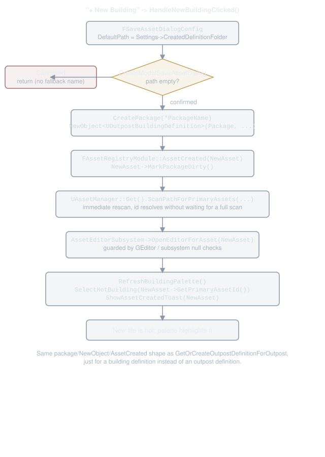

The Toolkit - FModeToolkit and Slate
This page is meant as a quick reference on FOutpostBuilderToolkit, the FModeToolkit that drives the mode's Slate panel, and how it's put together.
If you haven't read architecture.html yet, the short version is that the ed mode (edmode.html) owns all of the state, placement, and viewport drawing. The toolkit is purely the panel docked into the Modes tab. It reads the mode's state through getters and pushes user intent back through a small set of methods on UOutpostBuilderEdMode. It never owns gameplay logic itself.
The toolkit is assembly glue: a panel switcher plus a set of thin mount functions that construct 14 reusable SOutpost* widgets and wire their events back to the mode.
Almost none of the panel CONTENT lives in the toolkit's own methods. It lives on the widgets, each of which owns its own state and reads the editing session through a small shared read-model rather than a toolkit or mode pointer.
This page covers that shape first, then the behavioral territory that sits on top of it:
- The shape - Construction and Ownership, the File Map, the Widget Inventory, the two shared primitives, the widget-authoring recipe, Panel Anatomy.
- The behavior - the Building palette and its hotkeys, the "+ New Building" flow, the in-viewport overlays, and the Overhead camera viewport overlay.
The placement state machine, ghosts, and beams live in edmode.html. Fork-on-stamp and the rest of the prefab flow live in prefabs.html. Faction has no visual effect. What the faction row actually gates (which buildings a plot may field) lives in faction-visuals.html. The widget-extraction pattern itself, as a recipe for building the next reusable widget, is also summarized in extending.html.
Construction and Ownership
FOutpostBuilderToolkit holds a raw back-pointer to its owning mode, not a shared or weak pointer:
// OutpostBuilder/Source/OutpostBuilderEditor/Toolkit/OutpostBuilderToolkit.h
/** Back-pointer to the owning editor mode. NEVER call GLevelEditorModeTools() from this class. */
UOutpostBuilderEdMode* OwningMode = nullptr;
IMPORTANT: never call GLevelEditorModeTools() from anywhere in this class, including the destructor. This is the structural fix for a shutdown-time assert: the toolkit is torn down (by FEditorModeTools::DeactivateModeAtIndex, before the mode's own Exit() even runs) while GLevelEditorModeTools() is already mid-teardown itself.
Reaching back into mode tools during toolkit shutdown is undefined. The mode outlives the toolkit for the whole of Exit(), which is why the back-pointer stays a raw, always-valid pointer instead of needing a weak reference.
The constructor's initializer list builds the toolkit's two shared-state primitives (see "Two Shared Primitives" below) as TSharedRefs, since a TSharedRef has no default constructor:
// OutpostBuilder/Source/OutpostBuilderEditor/Toolkit/OutpostBuilderToolkit.cpp
FOutpostBuilderToolkit::FOutpostBuilderToolkit(UOutpostBuilderEdMode* InOwningMode)
: OwningMode(InOwningMode)
, WidgetContext(MakeShared<FOutpostBuilderWidgetContext>())
, PaletteModel(MakeShared<FOutpostPaletteModel>())
{
}
Neither is usable yet at this point: their delegate/attribute fields are still default-constructed. Init() runs once, when the mode activates the toolkit, and does a handful of things in order:
- Binds every
WidgetContextfield andPaletteModel->GateFactionAttributefirst, before any panel builder runs:TAttribute<T>::CreateSP(this, &FOutpostBuilderToolkit::SomeGetter)for each, so every widget the panel builders are about to construct sees a fully-bound Context/model from its very first frame.CreateSPneeds a live shared-pointer control block forthis, which is why this binding happens inInit()and not the constructor above. - Runs an
ensureMsgfsweep over every field it just bound (OUTPOST_ENSURE_CONTEXT_BOUND, a file-scoped macro defined and#undef'd around this one block, mirroring theLOCTEXT_NAMESPACEdefine/undef discipline).- A field left accidentally unbound would otherwise leave every widget that reads it polling a silent, forever-default value with no error anywhere until a designer noticed a stuck control. This is editor-only and costs nothing in a shipped build.
- Building the viewport-overlay widgets:
OverheadCameraOverlayWidget,PlacementOverlayWidget, andEditingOutpostBarWidget(each anSOutpostViewportOverlaymount, see "The Overhead Camera Viewport Overlay" below), plusBuildingCommandGridWidget(SOutpostBuildingCommandGrid, NOT itself anSOutpostViewportOverlay) andBuildModeBannerWidget(SOutpostBuildModeBanner, added to the viewport unconditionally right afterFModeToolkit::Init(), not toggled).- The first four are just
SWidgets at this point, not yet added to any viewport. (The thumbnail pool isFOutpostPaletteModel's own constructor's job, sized 64 and shared by every palette tile'sFAssetThumbnail, not somethingInit()does directly.)
- Building
ToolkitContent, the bareSWidgetSwitcherthatGetInlineContent()returns, gating the two panels. Building it calls the panel builders (BuildOverviewPanel/BuildEditingPanel), which is where the 13SOutpost*widgets actually get constructed and mounted.
The owning mode calls this toolkit's public HandleEditingOutpostChanged() / HandleCameraPositioningChanged() / HandlePlacementStateChanged() / HandlePaletteHotkey(int32) directly, through its own GetOutpostToolkit(). There are no mode-delegate subscriptions to set up here.
The destructor unwinds the asset-registry subscriptions and the undo registration, then removes all five viewport-overlay widgets:
// OutpostBuilder/Source/OutpostBuilderEditor/Toolkit/OutpostBuilderToolkit.cpp
FOutpostBuilderToolkit::~FOutpostBuilderToolkit()
{
if (FModuleManager::Get().IsModuleLoaded(TEXT("AssetRegistry")))
{
IAssetRegistry& AssetRegistry = FAssetRegistryModule::GetRegistry();
AssetRegistry.OnAssetRemoved().Remove(AssetRemovedHandle);
AssetRegistry.OnAssetRenamed().Remove(AssetRenamedHandle);
AssetRegistry.OnAssetAdded().Remove(AssetAddedHandle);
}
if (GEditor)
{
GEditor->UnregisterForUndo(this);
}
if (IsHosted() && OverheadCameraOverlayWidget.IsValid())
{
GetToolkitHost()->RemoveViewportOverlayWidget(OverheadCameraOverlayWidget.ToSharedRef());
}
if (IsHosted() && PlacementOverlayWidget.IsValid())
{
GetToolkitHost()->RemoveViewportOverlayWidget(PlacementOverlayWidget.ToSharedRef());
}
if (IsHosted() && BuildingCommandGridWidget.IsValid())
{
GetToolkitHost()->RemoveViewportOverlayWidget(BuildingCommandGridWidget.ToSharedRef());
}
if (IsHosted() && EditingOutpostBarWidget.IsValid())
{
GetToolkitHost()->RemoveViewportOverlayWidget(EditingOutpostBarWidget.ToSharedRef());
}
if (IsHosted() && BuildModeBannerWidget.IsValid())
{
GetToolkitHost()->RemoveViewportOverlayWidget(BuildModeBannerWidget.ToSharedRef());
}
}
The overlay removals are guarded by IsHosted() rather than the OwningMode check the rest of the class uses: the overlays live in the viewport host, not the mode, so they have to come down even in whatever corner case leaves OwningMode gone by dtor time. IsHosted() is the real guard there.
PaletteModel's own destructor (run when the toolkit's TSharedRef<FOutpostPaletteModel> member is destroyed) cancels and releases the palette's soft-class preload handle, so there is nothing left for this dtor to remember there.
File Map
OutpostBuilderToolkit.h is the ONE declaration surface (see its own FILE MAP comment for the authoritative, up-to-date list). The definitions are split one file per designer-facing panel, so changing a panel means opening its file rather than scanning a single monolith. Every function is still a member; the split is a pure .cpp partition, no straddling helpers, no shared private header:
OutpostBuilderToolkit.cpp- Lifecycle/Init(the Context/model binding +ensuresweep, all five viewport-overlay widgets, the panel switcher), panel routing, the Editing panel's shell (Back/label header), the undo client, asset-registry hooks, overlay lifecycle (SyncViewportOverlay).OutpostBuilderToolkitOverview.cpp- The Overview panel: its browse shell (Outposts/BuildingsSOutpostTabBar+ switcher) and the Outposts-tab mount point (constructs oneSOutpostsOverviewPanel).OutpostBuilderToolkitBuildingsTab.cpp- The Overview panel's Buildings-tab mount point, constructing the plugin's oneSOutpostBuildingsBrowserinstance, plus the refresh plumbing (RefreshAllBuildingBrowsers/HandleBuildingBrowserContentsChanged) that instance's own edits/creates drive.OutpostBuilderToolkitBuildTab.cpp- The Editing panel's whole body (BuildEditingPanelContent): thin mounts forSOutpostIdentityHeaderandSOutpostPlotsSection, the Select Plot Contents section (a thin shell aroundSOutpostPaletteFilterRow/SOutpostPaletteCategoryTabRow/SOutpostBuildingPalette/SOutpostSelectedBuildingPanel/SOutpostAssignRow, five pieces), the sharedRefreshBuildingPalette/SelectHotBuilding/HandlePaletteHotkey/HandleEyedropperPicktoolkit-level palette plumbing, andCreateNewBuildingDefinitionInteractive.OutpostBuilderToolkitConfigureTab.cpp- The identity header's mutation forwarders (HandleDisplayNameCommitted/HandleFactionChanged) and the Overhead camera pilot's forwarders (HandlePositionOverheadCameraClicked/HandleEditOutpostVolumeClicked/the Revert-Cancel-Done trio), all reached from the editing viewport bar.IsSaveEnabled/HandleSaveClickedalso live here, called by that bar's Save button.OutpostBuilderToolkitPlacement.cpp-IsPlacingPlot(theWidgetContext->bIsPlacingPlotforwarder, gating the palette family's "outpost placement only" rule) and the placement viewport overlay's bindings (GetPlacementOverlayText/HandleCancelPlacementClicked, the session's one Cancel affordance).OutpostBuilderToolkitEditingBar.cpp- The editing viewport overlay's content: the five-button row (Save / New Plot / Position Overhead Camera / Edit Outpost Volume / Randomize Plots) via the file-localOutpostBuilder::EditingBar::BuildBarButtonfactory, and each button's gate/handler pair.
The Widget Inventory
The 14 reusable SOutpost* widgets, in the order they were extracted (research/19's leaf-up ordering: dumb leaves first, then the pieces that assemble them). Every one follows the exemplar contract described under "The Widget-Authoring Recipe" below: owns its own state, holds no UOutpostBuilderEdMode*/FOutpostBuilderToolkit*, and reads the editing session only through an injected FOutpostBuilderWidgetContext and/or FOutpostPaletteModel.
SOutpostBuildingsBrowser- The building-definition browser (create, inline edit, Find References in World), mounted once in the Overview panel's Buildings tab. The original exemplar the whole widget contract is modeled on; written as an independent, reconstructable widget that assumes no particular mount count.SOutpostSaveFooter- The editing panel's pinned Save button, the trivial proof of the Context pattern end to end. Export-only, no internal mount today (see "The Save Footer" below).SOutpostTabBar<TEnum>- Generic reusable tab bar (SSegmentedControl<TEnum>wrapper). Its one mount is the Overview panel's Outposts/Buildings bar (EOutpostBrowseTab); the template is ready for a future second enum-keyed bar at the cost of nothing but its own enum and entries list.SOutpostsOverviewPanel- The Overview panel's Outposts sub-view: the outpost combo, its single Create/Edit/Restore/Edit(Place Actor)/Restore Definition action button, and the Plugin Settings details view.SOutpostIdentityHeader- The editing panel's Display Name field and Faction combo.SOutpostPaletteTile- The single palette tile leaf (building or Empty): oneSBorder-wrapped-SButton-with-SOverlayshape both callers mount identically. Carries a double-click event (OnTileDoubleClicked, timing-detected; see "Palette Tile Double-Click" below) and a three-cue selected treatment (brighter/thicker ring, an inner fill wash, a checkmark badge; see "Stronger Selected-Tile Treatment" below).SOutpostPaletteFilterRow- The Plot Size filter combo, mounted in the Select Plot Contents section's heading row beside "+ New Building" (filter to the button's left, both right-aligned). A single-combo row. Carries an OPTIONALContext: disabled ONLY during an outpost placement (bIsPlacementActive && !bIsPlacingPlot), fully live during a plot placement.SOutpostPaletteCategoryTabRow- The "All / one category per tab / ... / Uncategorized" tab row above the palette tiles. Carries the same optionalContext/narrow disabling rule asSOutpostPaletteFilterRow.SOutpostBuildingPalette- The tile-grid ASSEMBLY view. It refills fromFOutpostPaletteModel's visible subset.- Its own
Contextdrives the "disabled during outpost placement only" rule, threaded onto every tile's ownIsEnabled/Cursor(see "Placement Keeps the Editing Panel" below for why a wrapping-containerIsEnabledalone would not be enough). HandleTileDoubleClickedopens the definition's own asset editor, and the grid is also the Content Browser drop target (see "The Content Browser Drop" below).
- Its own
SOutpostSelectedBuildingPanel- Its own bordered SECTION BOX: a thumbnail-sized swatch, the building's own name shown LARGE (with the dirty asterisk folded in), Show-in-Content-Browser/Save icon-buttons, and a Clear button (fires the same signal the palette's Empty tile does). See "The Selected Building Section Box" below.- The empty-state line and the hot building's own scoped details view sit below, inside the same box.
SOutpostAssignRow- The building picker combo, the Assign Building button, and the Pin/Unpin button.SOutpostPlotsSection- The Plots section: the heading's two buttons (+ New Plot / Randomize Plots) and the multi-select plot list, a multi-columnSListView+SHeaderRow(Plot | Building | Size | a narrow warn column).SelectPlots(const TArray<AOutpostPlot*>&)drives the bidirectional viewport sync (see "The Plots List" below).SOutpostViewportOverlay- The shared bottom-center viewport overlay SHELL: one parameterized widget (label + a content slot) reused for the Overhead-camera-positioning overlay, the placement overlay, and the editing bar. Also carriesOutpostBuilder::ViewportOverlay::MakeDisabledAwareCursor(see "The Disabled-Button Cursor" below).SOutpostBuildingCommandGrid- The in-viewport building command grid: a grid (columns configurable, rows derived from content) of COMPACTSOutpostPaletteTiles (the shared leaf's.bCompact(true)argument, not a second tile widget) inside a single rounded, translucent shell, anchored to a configurable viewport corner. Shown only during PLOT placement.- NOT built on
SOutpostViewportOverlay(a corner-anchored tile grid doesn't fit that shell's bottom-center label+action-row shape, the same reasonSOutpostBuildModeBannerisn't one either). See "The In-Viewport Building Command Grid" below.
- NOT built on
FOutpostPaletteModel (covered next) is not itself a widget. It is the shared state primitive several of the rows above read and write.
Two Shared Primitives
Every extracted widget above reads the editing session through one or both of two shared, ref-counted (TSharedRef, never a bare value or UObject) primitives, both constructed once by the toolkit and handed down as SLATE_ARGUMENTs.
FOutpostBuilderWidgetContext
Declared in OutpostBuilderWidgetContext.h. A bundle of find-only reads of the editing session, as bound delegates/TAttributes, never a raw UOutpostBuilderEdMode* or FOutpostBuilderToolkit*. This is what turns "the widget knows the toolkit" into "the widget knows a small bag of getters". research/19 calls it the single highest-leverage move in the whole decomposition.
Every field must stay safe for PER-FRAME Slate bindings (IsEnabled/Visibility/Text attributes polled every tick), so nothing bound into it may ever LoadSynchronous. The project's "per-frame paths never load assets" invariant holds here too.
One-shot handlers that genuinely need a force-loading resolve (Save, a property commit) stay on the toolkit and are reached through each widget's own SLATE_EVENT, never through the Context.
The FIND-ONLY contract extends to naming: ResolveEditingDefinition on the Context is bound to FOutpostBuilderToolkit::FindLoadedEditingDefinition, NOT to the toolkit's near-identically-named but force-loading ResolveEditingDefinition.
The Context grows one field (or field-group) per widget that needs one, and keeps growing the same way: add a field here rather than threading a new toolkit/mode pointer into a new widget.
bIsPlacementActive drives the identity-header/Plots-section/Assign-row disabling rule. bIsPlacingPlot tells the palette family which placement kind is active (its narrower "outpost placement only" rule). See "Placement Keeps the Editing Panel" below.
Every field is bound in Init() via TAttribute<T>::CreateSP(this, &FOutpostBuilderToolkit::SomeGetter) or the delegate equivalent, to a small toolkit-owned forwarder method that itself just calls OwningMode->SomeGetter(), a layer of indirection that exists solely so CreateSP never has to expose OwningMode itself to any widget.
FOutpostPaletteModel and FScopedPaletteObserver
Declared in OutpostPaletteModel.h/.cpp. This is the DOCUMENTED DEVIATION from the Context's per-instance-state rule: a normal extracted widget owns its OWN state, but the palette's state (the entry cache, the filter state, the hot-building selection) is read by more than the palette view itself. The Assign picker, the palette hotkeys, and the Selected Building panel all consume it.
So it has to be ONE shared instance the toolkit owns, not view-local copies. FOutpostPaletteModel is that instance, constructed once by the toolkit and handed to every palette-complex widget.
It owns:
- The entry cache (
RefreshEntries()rescans the asset registry.GetBuildingPaletteEntries()/GetVisiblePaletteEntries()return the full set and the filtered/pinned/capped subset). - The hot-building selection (
GetHotBuildingId()/SetHotBuildingId(), which notifies observers on a genuine change. The per-frame highlight attributes alone aren't enough, since the panel palette and the in-viewport command grid share no invalidation root and a bare field write can leave one of them painting the old selection). - The filter state (
SizeFilter/CategoryFilter, each with a setter that callsRecomputeVisibleEntries()). - The view rule (
PassesFilters(): the mandatory faction gate, then category, then size, in that order). - The emptiness diagnosis (
DiagnoseEmptyVisibleSet()), the category census (ComputeCategoryPresence()), the pin intake (PinBuilding(), a static), the shared thumbnail pool, and the async soft-class preload handle.
Observers. The model exposes one explicit FSimpleMulticastDelegate: RegisterObserver/UnregisterObserver/NotifyObservers(). RecomputeVisibleEntries() calls NotifyObservers() at its end, the ONE place that happens. So every mutator that changes what should be visible (a filter setter, or RefreshEntries() indirectly) just calls it rather than notifying separately.
FScopedPaletteObserver (same header) is the RAII wrapper for the register/unregister pair, for any widget that holds a TSharedPtr<FOutpostPaletteModel> + FDelegateHandle and registers in Construct() / unregisters in its destructor. Held as a plain VALUE member (never a TSharedPtr to one), move-only.
It is not itself a crash fix: every observer callback is bound via CreateSP, which already holds a WEAK ref to its owning widget, so a missed unregister is safe, just untidy.
What it buys is structural: register and unregister can no longer drift apart (a copy-pasted Construct() whose matching destructor line was forgotten), and every FUTURE observer widget gets this for free by holding one as a plain member.
GateFactionAttribute is the model's one cross-cutting read, injected exactly like a Context field: bound by the toolkit in Init() to GetPaletteGateFaction() (the editing outpost ACTOR's faction, read directly and never from a cached mirror, since HandleEditingOutpostChanged refreshes the palette before it syncs the identity header's own faction display).
Everything else the model needs (the palette cap and EmptyPlotMesh off UOutpostBuilderSettingsAsset, the pin list off UOutpostRuntimeSettings) is a global-settings singleton read with no toolkit/mode dependency, so no further injection is needed.
The Widget-Authoring Recipe
Every widget above (and the exemplar the whole epic started from, SOutpostBuildingsBrowser) follows the same contract. Building a new one (or judging whether an existing one still follows the pattern) means checking it against this list:
- Owns its own state. Whatever the panel needs to remember (combo options, selection, a details view, a list's backing array) lives as a private member on the widget, built in its own
Construct(). Nothing is left on the toolkit "for now." - Holds no toolkit or mode pointer. No
UOutpostBuilderEdMode*, noFOutpostBuilderToolkit*, anywhere on the class. Every editing-session read comes through an injectedTSharedPtr<FOutpostBuilderWidgetContext>and/orTSharedPtr<FOutpostPaletteModel>, taken as aSLATE_ARGUMENTand null-checked at every use (never null in practice, but every access still guards). - Context/model in,
SLATE_EVENTs out. Reads flow in through the Context/model's find-only getters.- Anything that MUTATES (a transaction, a spawn, a config write) is reported back out as a
SLATE_EVENT(anFSimpleDelegateor a purpose-named one-param delegate), which the toolkit's mount site binds viaCreateSPto a thin forwarder that calls the oneUOutpostBuilderEdModemethod that actually does the work. A world-mutating action is never performed by the widget itself.
- Anything that MUTATES (a transaction, a spawn, a config write) is reported back out as a
- A public
Refresh*()(or self-refresh inConstruct()). A widget that owns state needs a way for an external trigger (undo/redo, an asset-registry event, a sibling panel's edit) to re-sync it.- The convention is a public
RefreshFoo()the toolkit's cross-cutting handlers (HandleEditingOutpostChanged,RefreshAfterTransaction,HandleAssetRemoved/HandleAssetRenamed) call directly on a storedTSharedPtr<SOutpostFoo>member. - The alternative, for the palette-complex widgets, is a
FScopedPaletteObserverthat self-refreshes offFOutpostPaletteModel::NotifyObservers()instead of needing an external call at all. - Every widget also self-refreshes once at the end of its own
Construct(), so the toolkit'sInit()no longer needs a matching "prime it" call for each mount.
- The convention is a public
- The per-widget
IsEditingContentUsable()mirror. The positioning-gate rule ("nothing should read as usable while positioning the Overhead camera") is a small two-lineIsEditingContentUsable() conston each widget that needs it (SOutpostIdentityHeader,SOutpostAssignRow,SOutpostPlotsSection), readingContext->bIsPositioningOverheadCameradirectly.- It is deliberately a small mirror repeated per widget, not a shared helper, since each is a two-line function and a shared helper would just be a new toolkit/mode-adjacent dependency for widgets built specifically to avoid one.
- Those same three mirrors also OR in
Context->bIsPlacementActive. - See "Placement Keeps the Editing Panel" below for why: during placement the containing body stays VISIBLE (individual controls disable instead), so this mirror is the ONLY line of defense there, which is why each is paired with a leaf-level
IsEnabledbinding on the actual interactive control (see that section for the engine-verified reason a container-levelIsEnabledalone would not be enough).
The button recipe (OutpostBuilderToolkitBuildTab.cpp, above BuildEditingPanelContent) spells out the concrete steps for the most common case, adding one button to an existing section:
// OutpostBuilder/Source/OutpostBuilderEditor/Toolkit/OutpostBuilderToolkitBuildTab.cpp
// TO ADD A BUTTON to the editing panel, copy the "+ New Plot" set end to end: an SButton block in the
// owning section widget's Construct() + its Handle*Clicked / Is*Enabled / Get*Tooltip trio declared in
// that widget's .h and defined in its .cpp + (when it acts on the world) a Can*/Do* pair on
// UOutpostBuilderEdMode that a thin toolkit forwarder (here or in the core file) relays a SLATE_EVENT
// to. Wire IsEnabled/ToolTipText/OnClicked exactly as that set does - see SOutpostPlotsSection.cpp's
// "+ New Plot" (the recipe below still applies verbatim to whichever widget a new button joins).
Those five SButton lines (.Text/.ToolTipText/.IsEnabled/.OnClicked, plus the block itself) are the whole Slate surface, and four of them ARE the button's four facts (label, tooltip, enabled, execute). Slate's (this, &F::Fn) overload is already the declarative sugar.
A leaf once proposed replacing them with a registration table and was refuted by its own design scout: the trio is where the logic lives and survives any registry, so the honest saving was small and spelled worse. Don't re-propose it without reading research/15.
Panel Anatomy - Overview and Editing
GetInlineContent() returns the bare SWidgetSwitcher with two slots. GetActivePanelIndex() decides which slot shows:
// OutpostBuilder/Source/OutpostBuilderEditor/Toolkit/OutpostBuilderToolkit.cpp
int32 FOutpostBuilderToolkit::GetActivePanelIndex() const
{
// Placement does not swap to its own panel - a placement session routes to the SAME Editing-panel
// index (1) editing does, with the editing panel's individual controls disabled rather than the
// whole panel replaced. This covers a brand-new OUTPOST placement too, where IsEditingOutpost() is
// still false (the outpost doesn't exist until ConfirmOutpostPlacement's EnterOutpostEditMode call).
return (OwningMode && (OwningMode->IsPlacementActive() || OwningMode->IsEditingOutpost())) ? 1 : 0;
}
Both panels exist the whole time the toolkit is alive. They're built once by the panel-builder functions during Init(), which is when every widget mount below actually happens. Entering or leaving the editing sub-mode, or starting/cancelling a placement, doesn't rebuild widgets; it just flips which slot draws.
The Overview panel (index 0)
A browse shell: BuildOverviewPanel() mounts an SOutpostTabBar<EOutpostBrowseTab> (Outposts / Buildings) over an SWidgetSwitcher. GetActiveBrowseTabValue() returns the stored ActiveBrowseTab directly.
- Outposts tab (
BuildBrowseTabOutpostsContent()) mounts oneSOutpostsOverviewPanel.- The outpost combo box, the single action button, and the Plugin Settings details view are ALL that widget's own state, built in its own
Construct(). - The toolkit supplies a
Context(forbIsPlayOrSimulateActive, the one editing-session read the button's enabled state needs) and five actionSLATE_EVENTs (OnPlaceOutpostForDefinition/OnRestoreOutpostForDefinition/OnLocateOutpostForDefinition/OnRestoreDefinitionFromActors/OnStartOutpostPlacement), each a thinCreateSPforward to oneUOutpostBuilderEdModecall, plusOnSettingsChanged(the toolkit still owns the actual config write-back and the out-of-/Gamewarning toast). - The combo's entry text, the placement-state classification (
ComputeOutpostPlacementState()/GetOutpostPlacementCue()), and the action button's text/tooltip/enabled state/dispatch (GetOutpostActionButtonText/GetOutpostActionButtonTooltip/IsOutpostActionEnabled/HandleOutpostActionClicked) are allSOutpostsOverviewPanelmembers, not toolkit methods. See that widget's header for the full behavior. RefreshOutpostList()is PUBLIC on the widget, called once at the end of its ownConstruct()and thereafter by the toolkit's cross-cutting triggers (HandleEditingOutpostChanged,HandleAssetRemoved, undo/redo).- The list has TWO sources: the asset registry's
UOutpostDefinitionassets (one entry each, except that a definition with more than one live placement in this map gets one entry per placement, labelledPlacement (Template) (placed)and keyed on its own instance id), plus the editor world'sAOutpostactors whose valid definition id matches no asset. - That's the ORPHAN case, shown as one "(missing definition)" entry per id (
EOutpostPlacementState::MissingDefinition), named by the id's asset name, however many actors carry it. The action button for that state reads Restore Definition (see "The restore flow" below).
- The outpost combo box, the single action button, and the Plugin Settings details view are ALL that widget's own state, built in its own
- Buildings tab (
BuildBrowseTabBuildingsContent(),OutpostBuilderToolkitBuildingsTab.cpp) mounts oneSOutpostBuildingsBrowserinstance (BuildingsBrowserOverview). See "The Buildings-Tab Browser Widget" below.
The restore flow
Deleting an outpost's actors does not clear the definition's PlacedOutpostPath. Interactive delete deliberately leaves it set so the base can be rebuilt from its records, and it also retires the outpost's registry entry inside the same transaction - so undo restores entry and actors together.
The "(deleted - restorable)" cue therefore reports either of two things: a fork-mode PlacedOutpostPath whose actor is gone, or a retired registry ghost whose anchor package is gone from disk. The second is what gives a shared template, which records no PlacedOutpostPath at all, a reachable Restore. There are two ways to act on it:
- Overview panel - select the entry, click Restore on
SOutpostsOverviewPanel's action button. Routes toUOutpostBuilderEdMode::RestoreOutpostForDefinition(FPrimaryAssetId). - Content Browser - right-click the
UOutpostDefinitionasset, Restore Placed Outpost (registered inOutpostBuilderEditorModule.cpp). Unlike the panel, this one has to activate the ed mode first, since it can be invoked with the mode closed.
Both open a single FScopedTransaction and restore registry-first - CollectRestorableGhosts then UOutpostStampLibrary::RestoreOutpostFromBaked per ghost, which rebuilds under the recorded instance handle - with legacy RestoreOutpost as a gated fallback. The whole restored cascade (outpost + every plot + the Overhead camera) still undoes as one step, matching the delete it reverses.
Both then select, frame (FrameOutpostBase), and EnterOutpostEditMode on the result, the same tail LocateOutpostForDefinition uses.
Restore legality is now decided in three layers rather than one:
CollectRestorableGhostsdecides what is even offered, gated on the disk-truth test (a retirement whose anchor package still exists is skew, never a candidate).- The caller then refuses the legacy path outright whenever the registry knows any live placement of that definition.
RestoreOutpost's own three refusals apply last, to pre-registry content only, re-checking the world itself rather than trusting its caller: it refuses (returns null, logging why) when the definition has no recorded placement, whenPlacedOutpostPathstill resolves to a live outpost, or when the recorded map isn't loaded.
Respawning in that last case would mint a second same-id placement and orphan the real one. This is what makes the panel's cached PlacementState snapshot safe to act on even when an undo has revived the actor since the last refresh: the worst case is a toast, not a duplicate.
The inverse restore: Restore Definition
The opposite loss (the ACTORS stand in the map but the definition ASSET is gone, deleted or renamed out from under a placed base) has its own path. Such an orphaned id shows in the combo as a "(missing definition)" entry (one per id, named by the id's asset name; several same-id actors still make ONE entry), and the action button reads Restore Definition, routing to UOutpostBuilderEdMode::RestoreDefinitionFromOutpostActors(FPrimaryAssetId).
It rebuilds a fresh UOutpostDefinition named EXACTLY the id's asset name (any other name would not resolve the actors' name-based id) in the CreatedDefinitionDirectory folder, from the actors' own mirrored state.
The write-through law is what makes every field recoverable:
DisplayNamefrom the anchor's label.Factionfrom the anchor's copy (the one survivor of the deleted asset).- One plot record per family
AOutpostPlot(PlotId preserved,RelativeTransformrecomputed against the anchor's record basis). - The camera record from a unique family Overhead camera when one stands.
- The volume-size override from a unique family volume's standing bounds (its largest axis;
VolumeSizeCmis a per-axis floor).
It then records the placement (RecordPlacement, not SyncDefinitionPlacement; a fresh asset has no old basis to migrate records from), registers/dirties the asset (saving stays the designer's), and rescans so the id resolves immediately. The entry flips to "(placed)" on the panel's own post-action refresh.
Four refusals, each a toast and never an overwrite:
- The id resolves again by click time (stale snapshot).
- MORE THAN ONE
AOutpostcarries the id (the record-ownership spine's fail-closed ambiguity rule). - No
AOutpostcarries it. - The target package already exists in memory/on disk/in the registry (a same-named asset outside the primary-asset scan paths; never overwritten, never renamed around).
GetOrCreateOutpostDefinitionForOutpost's own refusal of a valid-but-unresolvable id is unchanged and still correct. Its toast just points at this action as the sanctioned remedy.
Refresh honesty for the orphan lifecycle: deleting the asset while its actors stand flips the entry to "(missing definition)" live (the HandleAssetRemoved trigger), and the asset coming back flips it back live (HandleAssetAdded plus the widget's post-action refresh).
Deleting the orphaned ACTORS fires no asset-registry event, so that entry can linger until the next refresh (at the latest, opening the combo, which rebuilds the list every time).
Five Placement States, and Deleting a Definition That Isn't Coming Back
Every outpost-list entry carries one of five states (EOutpostPlacementState): NeverPlaced, Placed, DeletedRestorable, NotLoaded, and MissingDefinition.
NotLoaded is the quiet fourth case: a recorded placement whose actor's map isn't currently open. It's told apart from DeletedRestorable without ever loading a map to check (ComputeOutpostPlacementState only asks FindPackage, never TryLoad), and its entry keeps the plain Edit label rather than Restore, since respawning here would mint a duplicate the moment the real map loads back in (see "The restore flow" above).
The first four states all come off the SAME definition-asset scan RefreshOutpostList() runs first. MissingDefinition doesn't: it comes from a SEPARATE pass over every AOutpost actor in the loaded editor world, checking each one's definition id against the set the asset scan already found.
One scan catches "asset present, actor absent." The other catches "actor present, asset absent." Neither can stand in for the other.
A DeletedRestorable entry can also be discarded outright instead of restored: Delete Definition..., visible only for that state AND only when the row's cue came from PlacedOutpostPath rather than from a registry ghost.
It re-checks the SAME placement state the visibility binding used, TWICE, before it even asks: once against the cached row, then again, after a fresh load, against the definition's live PlacedOutpostPath.
The ghost exclusion is what keeps those two checks derived from the same source - a shared template records no PlacedOutpostPath, so a ghost-lit row would show the button and then silently refuse it. Only then does its own confirm dialog open (naming the fact that this is the one action here undo can't reach).
That second check is the one that earns its keep. An undo can silently restore the whole base with no refresh trigger to catch it, so a click that started over a genuinely gone outpost can land on a row that's since come back to life. Deleting the definition out from under a base that's standing again is exactly the disaster the re-check exists to prevent.
The Buildings-Tab Browser Widget
SOutpostBuildingsBrowser (SOutpostBuildingsBrowser.h/.cpp) is a self-contained SCompoundWidget extracted from what used to be entirely toolkit code, the original exemplar the whole widget contract is modeled on. It is mounted once, in the Overview panel's Buildings tab, as the plugin's only live instance.
The widget class itself assumes nothing about mount count. It was never written to expect exactly one mount site, so a future second mount elsewhere would cost nothing (each instance carries its own selection/details/find-results state, since Slate widgets are single-parent).
FBuildingBrowserEntry and FBuildingReferenceEntry (the browser's row structs) live in SOutpostBuildingsBrowser.h alongside the class that owns them. The widget holds no reference to UOutpostBuilderEdMode or any editing-session state at all.
Browsing or editing a building definition never disturbs the outpost being edited (research/18's Shape A decision: "read-only toward the editing session in all shapes"). So the browser needs nothing from the mode.
Two callbacks out cover everything it can't do itself: OnCreateBuildingRequested (mints a new asset; the modal dialog flow stays on the toolkit, shared with the editing panel's own "+ New Building") and OnContentsChanged (a building definition's fields changed; the toolkit answers by refreshing the palette too).
OutpostBuilderToolkitBuildingsTab.cpp itself is thin: the one mount-point function (BuildBrowseTabBuildingsContent()) plus the refresh plumbing.
That's RefreshAllBuildingBrowsers() (calls RefreshList() on the live instance; BuildingsBrowserOverview is a permanent toolkit member, built once in Init(), so a validity check is enough, with no weak-registry bookkeeping needed; the name stays "All" so a future second mount joins the same sweep with no call-site changes) and HandleBuildingBrowserContentsChanged() (the OnContentsChanged answer described above).
The browser list itself (BuildingBrowserListView/BuildingBrowserEntries, RefreshList()) applies no visibility cap, no filters, and no resolvable-primary-asset-id gate, unlike the palette: the browser is the editing surface for everything the project has, including a definition parked outside the scanned roots that the palette (an assignment surface) rightly hides.
Row text is the building's effective display name (GetEffectiveDisplayName() when the definition is resident, else MakeDefaultDisplayNameFromAssetName via a non-loading FastGetAsset). Hover for the package path.
Selection is preserved by id across refreshes, and the refresh runs off asset-registry remove/rename, undo/redo, and its own details view's property commits.
Find References in World reads three truths in precedence order:
- Live
AOutpostPlotactors for placements loaded right now (an assignment made since the last save counts immediately, because the bake is one save behind by construction). - The baked registry for placements that are not loaded.
- A definition's own
GetPlots()records only for content nothing has ever baked.
The search still loads no map, and the "N outpost(s)" total counts instances that actually reference the building rather than every placement of the definition.
The Editing panel (index 1)
The editing panel is one continuous, tab-less body: a header row (Back + the editing outpost's actor label) flowing straight into the content via FillHeight(1.f). BuildEditingPanelContent() (OutpostBuilderToolkitBuildTab.cpp) assembles everything about the outpost being edited, top to bottom. There is no pinned Save footer. Saving is the in-viewport editing bar's Save button + Ctrl+S (see "The Save Footer" below):
- Identity header (
BuildOutpostIdentityHeader(), a thin mount forSOutpostIdentityHeader,SAssignNew'd into theIdentityHeadermember) - Display Name (anSEditableTextBox) and, in its own scopedIsEnabled/ToolTipTextbox, the Faction combo.- There is no swatch anywhere in this row. The combo shows the enum's display text only. The widget owns its own combo options/selection.
- The toolkit supplies
Contextand two events,OnFactionChanged(answered byFOutpostBuilderToolkit::HandleFactionChanged,OutpostBuilderToolkitConfigureTab.cpp; the assign PLUS the Building-palette refresh, since the outpost's faction is the palette's mandatory gate andAssignFactionToEditingOutpostnever notifies anyone) andOnDisplayNameCommitted(answered byHandleDisplayNameCommitted, same file; the "Rename Outpost" transaction, below). - Both the Display Name field AND the Faction combo (bound directly on the combo itself, not just the wrapping box; see "Placement Keeps the Editing Panel" below) disable during a placement session, alongside the positioning gate.
The display-name commit goes through the same Modify/dirty discipline as any other edit to a data asset:
```cpp // OutpostBuilder/Source/OutpostBuilderEditor/Toolkit/OutpostBuilderToolkitConfigureTab.cpp void FOutpostBuilderToolkit::HandleDisplayNameCommitted(const FText& NewText, ETextCommit::Type CommitType) { UOutpostDefinition* Definition = ResolveEditingDefinition(); if (!Definition || Definition->DisplayName.EqualTo(NewText)) { return; }
FScopedTransaction Transaction(LOCTEXT("RenameOutpostTransaction", "Rename Outpost"));
Definition->Modify();
Definition->DisplayName = NewText;
Definition->MarkPackageDirty();
} ```
The no-op guard matters here in a way it wouldn't for a button click: SEditableTextBox fires OnTextCommitted on every focus loss, not only on an actual edit. Without it, tabbing into the field and back out would open an empty undo transaction every single time.
The handler lives on the toolkit even though its widget is SOutpostIdentityHeader, a file-organization choice (this file already owns the faction-adjacent code), not a behavior split. SOutpostIdentityHeader's OnDisplayNameCommitted SLATE_EVENT matches FOnTextCommitted exactly, so no wrapper is needed at the mount site.
- Select Plot Contents section (
BuildSelectPlotContentsSection(), directly inOutpostBuilderToolkitBuildTab.cpp; a thin SHELL rather than a single widget mount, since it assembles FIVE already-reusable pieces):- Heading row: heading text, then, right-aligned, the size filter combo (
SOutpostPaletteFilterRow) beside "+ New Building", filter to the button's LEFT, the size combo the only other control on the row. - The category tab row (
SOutpostPaletteCategoryTabRow). - The building palette (
SOutpostBuildingPalette; a building tile's double-click opens its definition's own asset editor, and the grid is the Content Browser's drop target). - The Selected Building panel (
SOutpostSelectedBuildingPanel,SAssignNew'd soSelectHotBuilding/RefreshAfterTransactioncan call its publicRefreshView()). - Below all of that, the Assign row (
SOutpostAssignRow, a freshSNew; it owns no state a toolkit trigger ever needs to reach). - See "The Building Palette" below for what each piece does, and "Placement Keeps the Editing Panel" for this section's placement-specific disabling rule (the palette family stays live during plot placement, unlike everything else here).
- Heading row: heading text, then, right-aligned, the size filter combo (
- Plots section (
BuildPlotsSection(), a thin mount forSOutpostPlotsSection,SAssignNew'd into thePlotsSectionmember) - heading row ("+ New Plot" / "Randomize Plots") and the multi-select plot list, a multi-columnSListView+SHeaderRow(see "The Plots List" below).- With zero plots, a muted "No plots yet - + New Plot adds one." line sits directly under the column headers (visibility-bound to the live entry count, so it collapses the moment the first plot lands).
- The widget owns
PlotListEntries/PlotListView. Its publicRefreshPlotList()is called by the toolkit'sHandlePlotsChanged()/HandleEditingOutpostChanged().
The Positioning Notice and Disabled Editing Controls
Positioning the Overhead camera closes off the rest of the editing panel with two layers, deliberately redundant:
- The whole normal body hides.
BuildEditingPanelContent()'s body (identity header, Select Plot Contents, and Plots) sits in oneSVerticalBoxwhoseVisibilityis bound toGetEditingPanelNormalContentVisibility(),EVisibility::Collapsedfor as long asOwningMode->IsPositioningOverheadCamera()is true. In its place, a siblingSTextBlockbound to the inverse (GetEditingPanelPositioningNoticeVisibility()) shows one line: "Positioning overhead camera - use the viewport controls (Revert / Cancel / Done)." - Every write-capable control inside that body is ALSO individually gated, on each widget's own per-widget
IsEditingContentUsable()mirror (see "The Widget-Authoring Recipe" above).SOutpostIdentityHeader,SOutpostAssignRow, andSOutpostPlotsSectioneach carry their own copy, ANDed ahead of their own existing rule.
Contrast this with placement ("Placement Keeps the Editing Panel" below), which deliberately does the OPPOSITE: the panel stays put and disables in place, per the user's own distinction between the two sessions. Because the body ISN'T hidden during placement, each widget's IsEditingContentUsable() mirror also ORs in Context->bIsPlacementActive, and there that per-widget gate is the control's only line of defense.
The Save Footer (export-only)
SOutpostSaveFooter (the editing panel's original pinned Save button) has no internal mount today. Saving the editing outpost's definition is reached through the in-viewport editing bar's own Save button (OutpostBuilderToolkitEditingBar.cpp) and Ctrl+S. IsSaveEnabled/HandleSaveClicked (the toolkit methods) are called only by that bar's button. The widget itself is untouched and fully functional.
It remains docs/extending.md's smallest worked example of the FOutpostBuilderWidgetContext pattern end to end, and a downstream project can still SNew(SOutpostSaveFooter).Context(...).OnSaveRequested(...) it into their own panel. Its own header doc is marked "export-only, no internal mount."
One layout fact is worth keeping for anyone touching BuildEditingPanelContent()'s layout: ToolkitContent (the bare SWidgetSwitcher GetInlineContent() returns) carries no SScrollBox of its own, because the engine's own FModeToolkit::UpdatePrimaryModePanel wraps whatever GetInlineContent() returns in ITS OWN SScrollBox before docking it in the Modes panel (unconditional, non-virtual, for any FModeToolkit like this one that never opts into ToolkitBuilder).
The editing panel's body is a plain FillHeight(1) region inside that engine scroll box, with no inner cap or scroll box of the toolkit's own to reconcile.
Delete Routing
The toolkit has no delete button. Interactive delete (the Del key and the outliner's own Delete command) routes through the mode's mixed-kind UOutpostBuilderEdMode::ProcessEditDelete (CanDeleteSelection()/DeleteSelection()), which deletes whatever combination of outposts and plots is selected, cascading when an outpost is among them, and is deliberately NOT gated on Play/Simulate.
Ctrl-click during placement (RemovePlotUnderCursor) is the other surviving plot-only removal path. See edmode.html's "Delete Routing" section for the full accounting.
The Disabled Treatment
Two facts about a building decide whether it may go on a plot, and they are independent:
- Size.
UOutpostBuildingDefinition::MatchesPlotSize(PlotSizeTag)evaluatesPlotSizeQuery, aFGameplayTagQuery, against the plot'sPlotSizeTag. An empty query is a wildcard, matching every size, the default for a newly created building. - Faction.
Building->SupportsFaction(OutpostFaction), passed the OUTPOST's faction. A Neutral outpost accepts every building; the gate only engages once an outpost has a real faction. An emptySupportedFactionsis a wildcard.
Composed in exactly one place, OutpostEditorUtils::EvaluateBuildingForPlot, which returns which rule refused rather than a bool. Three consumers read it: SOutpostAssignRow's IsAssignEnabled/GetAssignTooltip (via FOutpostBuilderToolkit::GetSelectedPlotEligibility, exposed to the widget through WidgetContext->GetSelectedPlotEligibility rather than re-derived locally; see that Context field's own doc for why it must stay toolkit-computed), and Randomize's pool filter (SOutpostPlotsSection).
So the Assign button can never refuse what Randomize would happily assign. Never test SupportedFactions directly: the Neutral rule isn't expressible as a membership test.
A mismatched building is refused at ASSIGN time only. One already sitting on a now-mismatched plot is never auto-deleted or reassigned.
A second, OFFER-level surface for the faction half exists too: the palette and the Assign row's picker no longer list buildings the editing outpost's faction can't field at all. See "Palette Filters and the Faction Gate" below. The two are complementary: the gate narrows what's offered, the disabled treatment refuses what still gets picked. Only the ASSIGN path is authoritative.
The per-frame hazard, and how it's handled. Slate .IsEnabled/.ToolTipText are TAttributes polled EVERY FRAME, and OutpostAssetResolve.h's rule is that LoadPrimaryAssetSync belongs on one-shot actions only.
So the button resolves its building from FBuildingPaletteEntry::Definition (a pointer FOutpostPaletteModel::RefreshEntries already loaded for the thumbnail, so caching it costs zero new loads), falling back to find-only FindLoadedPrimaryAsset (FOutpostPaletteModel::FindCachedBuilding). Caching the object rather than copies of the two fields is what keeps the rule single-homed.
The faction likewise comes from the owning outpost ACTOR (UOutpostBuilderEdMode::GetFactionForPlot), never a definition load.
That resolve can come up empty. When it does, the button stays permissive: AssignBuildingToSelectedPlot re-checks authoritatively with a real load before writing anything, and toasts the same wording (FOutpostBuilderToolkit::GetAssignRefusalText, a public static both the widget's tooltip and the mode's toast call) the tooltip would have shown.
Randomize is filtered for the same reason the button is. Its pool is filtered per plot; the Can* check is a per-frame binding too, so it deliberately does NOT ask "is anything eligible". That lives in the one-shot click that can afford the loads. A toast says how many were skipped.
The Placement Rule Matrix (Plot Tags) - Warn-Only, and Deliberately Separate
The Disabled Treatment above is BLOCKING: a size or faction mismatch refuses assignment outright.
A second rule is the opposite shape on purpose (user decision of record): a plot carries an arbitrary, PROJECT-OWNED FGameplayTagContainer PlotTags (no plugin-registered vocabulary; author your own in the project's DefaultGameplayTags.ini, exactly like BuildingCategory's taxonomy, unlike PlotSize's plugin-native four tags), and a building carries PlotTagQuery (FGameplayTagQuery, empty = fits everything, the same wildcard convention PlotSizeQuery/SupportedFactions establish).
A mismatch never blocks: not assignment, not Randomize's pool, not the palette offer. It only flags.
Composed in exactly one place, OutpostEditorUtils::EvaluateBuildingPlotAdvisory (EBuildingPlotAdvisory::NoWarning/PlotTagMismatch), deliberately a SEPARATE function from EvaluateBuildingForPlot, not a third case folded into EBuildingPlotEligibility: merging the two would tempt the disabled treatment to start consuming a result the user explicitly decided must never block anything.
Four surfaces call it, all editor-only, all advisory:
- The Assign row's tooltip (
SOutpostAssignRow::GetAssignTooltip) appends a warning line when the advisory fires for the (hot building, selected plot) pair. The button itself stays enabled/disabled exactly as the disabled treatment alone would leave it. - The palette tile (
SOutpostPaletteTile/SOutpostBuildingPalette) shows a smallIcons.Warningglyph (bottom-right corner; hotkey owns top-left, pin owns top-right) when the advisory fires for that tile's building against the palette's CURRENTLY SELECTED plot, live per-frame like the selection highlight (SOutpostBuildingPalette::GetTileWarningVisibility) since a plot selection change doesn't rebuild the palette.- This is the one place this widget complex reads
FOutpostBuilderWidgetContext::GetSelectedPlotat all, a narrow, documented amendment to its "takes no Context" origin story (see the widget's own header). - The mid-placement glyph judges against the plot placement keeps selected, the one just placed. Since a freshly placed plot carries no tags, a tag-demanding building's glyph lights there, and that is a truthful preview: auto-assigning that building to the NEXT fresh plot produces exactly the warned pairing the glyph shows, the same one the plot list's drift icon then reports.
- This is the one place this widget complex reads
- The Plots list row (
SOutpostPlotsSection) shows the same glyph as DRIFT DETECTION: the row's already-assigned building's query rejected the plot's current tags.- That means tags edited after assignment, or a Randomize pairing that landed in the warned set (accepted and expected: Randomize is NOT biased away from warnings). Computed once per
RefreshPlotList, the same snapshot cadence the row's text already has.
- That means tags edited after assignment, or a Randomize pairing that landed in the warned set (accepted and expected: Randomize is NOT biased away from warnings). Computed once per
UOutpostDefinition::IsDataValidemits one WARNING-severity finding per stored assignment the query rejects. This is the one surface that does NOT callEvaluateBuildingPlotAdvisory:UOutpostDefinitionlives in the RUNTIME module, which cannot depend onOutpostBuilderEditor, so it callsUOutpostBuildingDefinition::MatchesPlotTagsdirectly instead.- This is documented as safe because the editor-module function is nothing but that same call wrapped in an enum, with no additional composed logic to drift from.
Enforcement is editor-only. UOutpostStampLibrary's runtime stamping/restore path copies PlotTags record->actor (the same write-through PlotSizeTag gets) but never evaluates the query. A packaged game never sees a warning, never refuses a spawn, never even links against the editor-module advisory function.
Edit Outpost Volume, Create-if-Missing
The editing viewport bar's Edit Volume button is the one place this verb is reachable. HandleEditOutpostVolumeClicked (OutpostBuilderToolkitConfigureTab.cpp) calls OwningMode->EditVolumeForEditingOutpost(), which creates the outpost's Outpost Volume if missing (else finds it via FindVolumeForEditingOutpost() when spawning is refused) and either way SELECTS the resulting volume.
It RETURNS bool: true iff a volume was actually resolved/selected, false on every refusal. So HandleEditOutpostVolumeClicked can tell success from refusal before doing anything further.
On success, it hands the editing outpost's definition id to FOutpostBuilderEditorModule::BeginEditVolumeExcursion, a MODULE-level call, deliberately not a toolkit method, because the excursion's very first act is activating the engine's Geometry ("Brush Editing") mode, which deactivates Outpost Builder mode as a side effect (UEdMode::IsCompatibleWith always returns false, and FEdModeGeometry::IsCompatibleWith only allows EM_Bsp, so neither mode tolerates the other).
And THAT tears down this toolkit and every viewport overlay it hosts, including the button that was just clicked.
Nothing toolkit-owned can survive to host a "come back" bar, so the excursion object (FOutpostVolumeExcursion) lives on the module instead, reached through FModuleManager::GetModuleChecked<FOutpostBuilderEditorModule>.
Full mechanics (activation, the return overlay, the Esc hook, and the abnormal-teardown story for a manual mode switch or a map close) are in reference.html's "Edit Outpost Volume Excursion". This toolkit has exactly one call site and no other involvement.
The Contextual Overhead Camera
Each outpost has one saved camera framing (UOutpostDefinition::OverheadCamera) plus a per-plot map (TMap<FGuid, FOutpostCameraRecord> PlotCameras); the whole flow reads the current editor SELECTION to decide which record it's working with:
OwningMode->GetCameraFramingTarget()resolves the selection to exactly oneAOutpostorAOutpostPlotbelonging to the editing outpost's definition, or null for anything else. Position Overhead Camera's enabled check includesGetCameraFramingTarget() != nullptr(one of its four ANDed conditions), and its tooltip names what's wrong when it's null.- The Position/Done pilot session keys off whichever target
GetCameraFramingTarget()currently resolves to. The Revert/Cancel/Done controls live on the viewport overlay; the positioning overlay's label bindsGetOverheadCameraOverlayLabelText, rendering"Positioning Overhead Camera - Framing: <target>"from the session's own snapshot (OwningMode->GetPositioningFramingTargetName(), set atStartOverheadCameraPositioning, NOT a liveGetCameraFramingTarget()re-read, which can drift from what Done will write). Seeedmode.html's positioning-session section. - There is exactly one
AOverheadCameraactor per outpost, total.PlotCamerasholds saved FRAMINGS, not extra camera actors.EnterOutpostEditModeunconditionally callsEnsureOverheadCameraForEditingOutpost()(no-op if a unique camera already exists), so the camera actor exists the moment editing starts. - KNOWN LIMITATION, documented on
PlotCamerasitself inOutpostDefinition.h: entries are stored relative to the OUTPOST's record basis, NOT the plot's own transform. Moving a PLOT does not move its saved framing.
FOutpostBuilderToolkit is an FEditorUndoClient as well as an FModeToolkit, registered via GEditor->RegisterForUndo(this) at the end of Init(). Its PostUndo/PostRedo overrides both call RefreshAfterTransaction(), which re-runs HandleEditingOutpostChanged() (the outpost list, the plot list, the Building palette, the identity header's faction selector) plus SelectedBuildingPanel->RefreshView() and RefreshAllBuildingBrowsers(), and then relays straight to OwningMode->HandleTransactionWhilePlacing().
That relay is why the mode needs no undo registration of its own: the toolkit is the plugin's one registered undo client, so an undo/redo landing mid-placement (a session with no footprint snapshot of its own, but still holding stale validity state) only ever reaches the mode through this one path.
That's the full dynamic-panel-plus-mode refresh set. It exists because undo/redo of a data-only definition change fires neither HandleEditingOutpostChanged() nor a selection-changed event on its own.
The asset registry's OnAssetRemoved/OnAssetRenamed likewise refresh the Overview combo and palette so deleted/renamed assets never linger as stale entries. OnAssetAdded does the same for a definition CREATED outside this toolkit (a Content Browser duplicate, a Save-As, an import).
It early-outs while IAssetRegistry::IsLoadingAssets() is true, so the initial/background asset scan (every asset added fires the delegate) never triggers a refresh storm. A single post-scan creation reaches the same class-filtered refresh HandleAssetRemoved uses.
A definition rename reaches further than this toolkit-side refresh. FOutpostBuilderEditorModule::OnDefinitionAssetRenamed is a SEPARATE OnAssetRenamed subscriber, registered by the module rather than the toolkit, and it does different work.
It rebinds every family actor's OutpostDefinitionId to the new name-based id in the loaded editor world, and re-folds any actor sitting in the STALE name-keyed World Outliner folder into the fresh one (a definition rename is the one instability the name-based folder scheme has to account for).
The rebind is deliberately NOT wrapped in a transaction: the rename itself isn't undoable, so an undoable rebind could later revert on its own and re-orphan actors against a name that's already gone.
The Building Palette
The palette complex is one shared model (FOutpostPaletteModel) plus six widgets built leaf-up from it (SOutpostPaletteTile, SOutpostPaletteFilterRow, SOutpostPaletteCategoryTabRow, SOutpostBuildingPalette, SOutpostSelectedBuildingPanel, SOutpostAssignRow). See "Two Shared Primitives" and "The Widget Inventory" above for the overview. This section covers the BEHAVIOR; the pieces that make it up moved into widgets, but the behavior itself is the same.
The thumbnail pool is created once, in FOutpostPaletteModel's own constructor:
// OutpostBuilder/Source/OutpostBuilderEditor/Widgets/OutpostPaletteModel.cpp
FOutpostPaletteModel::FOutpostPaletteModel()
// Sized generously so a project with many building definitions doesn't start recycling tiles'
// thumbnails out from under the designer mid-session.
: ThumbnailPool(MakeShared<FAssetThumbnailPool>(64))
{
}
FOutpostPaletteModel::RefreshEntries() rebuilds BuildingPaletteEntries from the asset registry, filters out anything whose primary asset id doesn't actually resolve, and prefers a real thumbnail of the building's own mesh over the definition asset's generic icon:
// OutpostBuilder/Source/OutpostBuilderEditor/Widgets/OutpostPaletteModel.cpp (abbreviated)
void FOutpostPaletteModel::RefreshEntries()
{
BuildingPaletteEntries.Reset();
TArray<FAssetData> Assets;
FAssetRegistryModule::GetRegistry().GetAssetsByClass(
UOutpostBuildingDefinition::StaticClass()->GetClassPathName(), Assets, /*bSearchSubClasses=*/true);
for (const FAssetData& AssetData : Assets)
{
const FPrimaryAssetId AssetId(UOutpostBuildingDefinition::PrimaryAssetTypeName, AssetData.AssetName);
// Only offer tiles whose primary asset id actually resolves.
if (!UAssetManager::IsInitialized() || !UAssetManager::Get().GetPrimaryAssetPath(AssetId).IsValid())
{
continue;
}
TSharedPtr<FBuildingPaletteEntry> Entry = MakeShared<FBuildingPaletteEntry>();
Entry->AssetData = AssetData;
Entry->AssetId = AssetId;
// ... thumbnail resolution against BuildingMesh when set, else the definition asset itself;
// Entry->Definition caches the loaded pointer for later per-frame reads.
BuildingPaletteEntries.Add(Entry);
}
RecomputeVisibleEntries(); // Also NotifyObservers() at its end.
// ... plus the async residency warmer described below.
}
That resolution check earns its keep. GetAssetsByClass finds every UOutpostBuildingDefinition package the registry knows about, including ones sitting outside whatever paths ScanPathsForPrimaryAssets covers. Filtering here keeps the palette honest with what the picker and the runtime can actually use.
The refresh ends with an async residency warmer, not a load. After rebuilding the entry cache and notifying every observer, RefreshEntries() cancels any prior PalettePreloadHandle, collects the FSoftObjectPaths of every entry's BuildingActorClass + BuildingMesh (ALL entries, not just the visible subset) plus the settings asset's EmptyPlotMesh, skips anything null or already resident, and, if anything remains, issues one RequestAsyncLoad, stashing the handle back on PalettePreloadHandle.
This is a pure residency hint: the one-shot LoadSynchronous sites the ghost/preview code already uses (ResolvePreviewGhostSource et al., see edmode.html) remain the authoritative load. The handle is cancelled and replaced on every refresh, and cancelled and released in FOutpostPaletteModel's destructor.
Note: BuildingPaletteEntries isn't sorted. Whatever order GetAssetsByClass hands back is also the hotkey order. Treat the hotkeys as "whatever's currently in slot N" of GetVisiblePaletteEntries(), not necessarily of GetBuildingPaletteEntries().
RefreshBuildingPalette() on the toolkit (OutpostBuilderToolkitBuildTab.cpp) is a thin wrapper: it calls PaletteModel->RefreshEntries(), then pushes the FULL building count into the mode's HUD legend (SetPaletteEntryCount), the one effect that was never palette-MODEL state, since it belongs to the mode's viewport HUD, not the panel.
Pinning a Building, and What's Actually Rendered
GetBuildingPaletteEntries() is "every building definition the project has." It is NOT what the palette renders. RecomputeVisibleEntries() computes a second array, GetVisiblePaletteEntries(), the subset the palette actually shows and the hotkeys actually address:
// OutpostBuilder/Source/OutpostBuilderEditor/Widgets/OutpostPaletteModel.cpp (abbreviated)
void FOutpostPaletteModel::RecomputeVisibleEntries()
{
// ... self-heals a vanished category-filter bucket first (see "Palette Category Tabs" below) ...
VisiblePaletteEntries.Reset();
const int32 MaxDefault = FMath::Max(0, UOutpostBuilderSettingsAsset::Get().MaxDefaultBuildingPaletteEntries);
// Pinned entries first - always shown. Filters run before pin AND cap in both passes.
for (const TSharedPtr<FBuildingPaletteEntry>& Entry : BuildingPaletteEntries)
{
if (!PassesFilters(*Entry)) continue;
if (IsBuildingPinned(Entry->AssetData.PackageName)) VisiblePaletteEntries.Add(Entry);
}
// Then up to MaxDefault MORE non-pinned entries, in their existing order.
int32 UnpinnedAdded = 0;
for (const TSharedPtr<FBuildingPaletteEntry>& Entry : BuildingPaletteEntries)
{
if (UnpinnedAdded >= MaxDefault) break;
if (IsBuildingPinned(Entry->AssetData.PackageName)) continue;
if (!PassesFilters(*Entry)) continue;
VisiblePaletteEntries.Add(Entry);
++UnpinnedAdded;
}
NotifyObservers();
}
MaxDefaultBuildingPaletteEntries (UOutpostBuilderSettingsAsset, default 9, lining up with the 1-9 hotkeys) is how many NON-pinned definitions show by default. PinnedBuildingDefinitions (TArray<FName> of package names, a HIDDEN config-only property on the host UOutpostRuntimeSettings) always show IN ADDITION to that count.
The palette filters (next section) run FIRST, ahead of pin and cap: a pinned building that fails the current filter or the mandatory faction gate does not show.
Pinned entries also float to the FRONT rather than staying in their original BuildingPaletteEntries position, the same convention pinned tabs and channels follow elsewhere.
The Pin/Unpin button lives on SOutpostAssignRow, beside Assign Building, and acts on whichever building is currently HOT (PaletteModel->GetHotBuildingId()): HandlePinClicked resolves the hot building's package name via UAssetManager::GetPrimaryAssetPath (no load), fires OnPinRequested, which the toolkit's HandlePinHotBuildingClicked answers by toggling it in the host UOutpostRuntimeSettings's PinnedBuildingDefinitions, calling SaveConfig(), then RefreshVisiblePaletteEntries() (a thin toolkit forward to PaletteModel->RecomputeVisibleEntries()), with no asset-registry rescan needed.
The pin badge. A pin-shaped corner badge (FAppStyle::Get().GetBrush("Icons.Pinned")) sits on every pinned tile's TOP-RIGHT corner (the opposite corner from the 1-9 hotkey badge), built by SOutpostPaletteTile itself off its bIsPinned argument, with the explanation folded into the tile's own tooltip. Pinning's semantics are palette-VISIBILITY-only.
Don't confuse this with the unrelated, informal use of the word "pin" elsewhere on this site (runtime-loadout.html): "assign a building to a plot to pin it" there means fixing that ONE PLOT's building choice so it stops taking the deterministic per-plot randomized pick, a completely different, plot-level concept with no button behind it at all.
There is no per-tile faction color coding of any kind. SupportedFactions drives only the palette's mandatory faction gate (below), never a tile decoration. A restricted building never shows in the palette at all (the gate omits it); one picked another way is refused with a tooltip.
Palette Category Tabs
UOutpostBuildingDefinition::BuildingCategory is a FGameplayTag (meta = (Categories = "OutpostBuilder.BuildingCategory")) that groups buildings in the palette and does nothing else. It has no bearing on MatchesPlotSize/SupportsFaction eligibility. Empty is uncategorized, the default and fully valid.
SOutpostPaletteCategoryTabRow is the tab row, an SWrapBox of buttons, one of the two RECONSTRUCTABLE model observers (alongside SOutpostBuildingPalette; see FScopedPaletteObserver's own doc for why a widget that can be destroyed while the model lives on needs an RAII unregister, even though a missed one is already safe).
RefillTabRow() reads PaletteModel->GetBuildingPaletteEntries() (the FULL set, not the visible subset; the tab row answers "what categories does this project's buildings have"), via PaletteModel->ComputeCategoryPresence() (the one shared census both this row and RecomputeVisibleEntries()'s self-heal read, so the two can never disagree about what exists):
- Buttons read All (always first, unset filter), then one per DISTINCT category present, sorted by leaf tag segment (never registry/creation order), then Uncategorized LAST, only when the set is actually mixed.
- The WHOLE row is collapsed (
GetRowVisibility, driven bybAnyEntryCategorized) until at least one entry resolves a non-empty category. - Selection lives in
PaletteModel'sCategoryFilter(TOptional<FGameplayTag>: unset = All; set-but-invalid = Uncategorized; set-valid = that exact category). A click (HandleTabClicked) callsPaletteModel->SetCategoryFilter(), which recomputes the visible subset and notifies internally. - A selected bucket can VANISH mid-session.
RecomputeVisibleEntries()self-heals BEFORE filtering: it re-runsComputeCategoryPresence()and resets a vanished bucket's filter to All. Without that, the stale filter would reject every entry while the row, seeing zero categories, collapsed entirely, both hosts empty and the way back hidden.
PassesFilters gates on it right after the mandatory faction gate and before the size combo: All passes everything. Uncategorized passes only an entry whose resolved category is empty. A real category requires EXACT leaf-tag equality against CategoryFilter, deliberately NOT the hierarchical MatchesTag() rule, so a sub-category never also shows up under its parent's tab.
SOutpostBuildingPalette::GetEmptyReasonText()'s "filtered" branch names the category tab alongside the size combo. See "Palette Filters and the Faction Gate" below for the full gate order.
The editing panel mounts the category tab row directly in BuildSelectPlotContentsSection, above the palette tiles it filters (the one palette host).
Palette Filters and the Faction Gate
SOutpostPaletteFilterRow holds ONE SComboBox, Plot Size ("Any size" + one row per REGISTERED OutpostBuilder.PlotSize tag), mounted in the Select Plot Contents section's heading row beside "+ New Building" (filter to the button's left, both right-aligned). Its option list (SizeFilterOptions) is built once per mounted instance, in the widget's own Construct() (RefreshFilterOptions()), a tag-registry walk cheap enough that there's no cross-instance state to keep in sync by sharing one copy.
There is deliberately no SComboBox member holding selection, and no InitiallySelectedItem anywhere. Slate is single-parent, so the filter STATE lives on FOutpostPaletteModel (SizeFilter), and each combo instance's label is an attribute binding (GetSizeFilterDisplayText) that re-reads the model. Filter state is in-memory session state: nothing serializes it, and it resets to Any on restart.
The actual rule is FOutpostPaletteModel::PassesFilters(Entry), THREE checks in order:
- The mandatory faction gate - reject unless
Definition->SupportsFaction(gate faction), where the gate faction is the editing outpost ACTOR's faction (GateFactionAttribute, bound by the toolkit'sGetPaletteGateFaction(), read directly and never from a cached mirror). Skipped entirely when no editing outpost resolves. This is the palette's ONE faction-related filter. - The Category tab row - see above.
- The Plot Size combo -
Definition->MatchesPlotSize(SizeFilter).
Both read the LIVE definition through FBuildingPaletteEntry::Definition; a null (asset deleted since the last refresh) short-circuits before either check and PASSES, permissive on ignorance. Filtering is a view rule only: it never touches HotBuildingId, so a filter that hides the hot building's tile does not clear the hot building.
The combo's OnSelectionChanged handler calls PaletteModel->SetSizeFilter, which recomputes and notifies internally, remapping the 1-9 hotkeys exactly the way pinning always has (HandlePaletteHotkey indexes GetVisiblePaletteEntries()), with the same refill re-rendering the tile badges from the same indices.
When the visible list comes up empty with entries still in the project, SOutpostBuildingPalette::FillView() appends a subdued explanation line (GetEmptyReasonText()) naming the ACTUAL cause. The widget only words the answer; WHICH narrowing emptied the grid is the model's call, FOutpostPaletteModel::DiagnoseEmptyVisibleSet(), and it reports the OUTERMOST cause rather than the most recently touched control. That order is the faction gate before the filters, the filters before the cap:
FactionGate- no definition in the project is fielded by the editing outpost's faction. The line names that faction, and points at the building's Supported Factions or at setting the outpost to Neutral. No palette control can fix this one.Filters- something passes the gate, but nothing passes the category tab and size combo on top of it. The line names both controls.Cap- entries pass the gate and the filters, but the cap is 0 and nothing pinned survives it.
Ordering it that way is what keeps each wording a remedy that works. Blaming the cap first (it's the last control in the chain, so it looks like the one that ran out of room) would tell someone whose faction gate or filters had already emptied the palette to raise a cap that changes nothing.
SOutpostSelectedBuildingPanel::GetEmptyStateText() carries a matching branch so its own empty-state stops saying "click a tile or press 1-9" at a palette with no tiles and no key that resolves. The mode's HUD legend deliberately still receives the FULL building count: a filtered view must not make the HUD claim the project has no buildings.
The Content Browser Drop
SOutpostBuildingPalette is a drop target for the engine's own FAssetDragDropOp, so an existing drag habit works here.
It's worth being precise about what a drop does, because "add this to the palette" is the obvious reading and it isn't available: this roster is DERIVED from an asset-registry scan, not an authored list, so a dropped definition was already a member the instant it was saved.
The two things a drop can genuinely change are which member is SELECTED and which members survive the cap, so OnDrop does exactly those two, in that order:
- Pin (
FOutpostPaletteModel::PinBuilding, one recompute for the whole payload afterwards) - the only durable, visible sense in which this palette can "take" a building.- Pinned entries show ahead of everything else and are never counted against
MaxDefaultBuildingPaletteEntries, so the dropped building has a tile even in a project whose roster runs past the cap. - It ADDS only: a drop is an intake gesture, and making a second drop of the same asset silently un-pin it would be a toggle the gesture doesn't read as. The Assign row's Pin/Unpin button is the way back out, and the tile's pin badge is what says the drop did this.
- Pinned entries show ahead of everything else and are never counted against
- Select - "I dragged this one over" is a statement about what to build next, so the FIRST dropped definition goes through the same
OnBuildingSelecteda tile click fires, putting it on the ghost and in the Selected Building panel immediately.- A multi-asset drop pins them all but selects one, since there's only one Selected Building and picking the first is the only choice that doesn't depend on a drag order you can't see.
Deliberately not done: creating or duplicating assets, writing to the outpost, or assigning the building to a plot. A drop onto a picker isn't an edit to the level.
EvaluateDrop is the one classification rule, shared by the hover cue and the drop itself (OnDrop re-derives it rather than trusting the last hover frame's cached verdict).
It type-tests each asset with OutpostEditorUtils::IsAssetInstanceOf (load-free and subclass-aware, matching the bSearchSubClasses=true scan that builds the palette, so a Blueprint subclass definition drops like any other), then keeps only ids the Asset Manager can resolve, the same admission test RefreshEntries applies to a tile.
Five verdicts come out of it, each with its own decorator wording on the engine's standard drag decorator plus a border tint:
Accept- at least one droppable definition, and it passes the current filters. The decorator names the exact two effects ("Pin"<name>"to the palette and select it") rather than a vague "add", because the pin is a persistent settings change and must be stated before the mouse is released.AcceptHiddenByFilters- droppable, but the category tab or size combo hides every one of them. Still an accept (both effects land, and either filter is one click from revealing the tile), and it only needs its own wording, or a drop that worked would read as a drop that did nothing and get repeated.RejectFactionGate- every dropped definition is refused by the editing outpost's MANDATORY faction gate.- Refused rather than accepted, because the pin is a settings write with no transaction and no undo, and the palette makes the filters beat the pin: pinning a building this outpost's faction can't field would write a permanent entry that never becomes a tile, with nothing on screen to say why. The wording names the actual fix.
RejectUnresolvable- building definitions whose primary asset id the Asset Manager can't resolve. They can never become tiles, so the drop is refused with its own wording instead of silently doing nothing.Reject- not a payload this palette takes, or the palette is disabled by an active outpost placement. That last clause matters: a drop that selects a hot building is exactly the action those tiles are disabled FOR, so it's refused here too rather than leaving one live path into a state the rest of the widget is closed for.
The border only exists while a drag hovers (GetDropTargetBorderImage returns no brush otherwise), so the palette never carries a permanent frame it didn't have before. An accept tints it the palette's ONE selected-accent hue (OutpostBuilder::Palette::PaletteSelectedAccentColor), since the drop's result IS a selection; a refusal tints it red. OnDragOver returns Handled() only on an accept, so an unhandled drag stays free to find a target that does want it.
The Eyedropper
HandleEyedropperPick(FPrimaryAssetId) is the toolkit's landing point for the eyedropper (FOutpostBuilderCommands::PickBuildingFromPlot, E by default). The MODE resolves which plot was picked and reads its AssignedBuildingId; this end does only what a tile click does, through the same SelectHotBuilding, so a pick and a click can't leave the palette, the ghost, and the details view in different states. See edmode.html for the pick target's own resolution rule and its guards.
It filters nothing. An INVALID BuildingId is a real, expected input rather than a failure to screen out: a plot with nothing assigned IS the palette's Empty tile, the same invalid id that tile clicks with, so eyedropping an empty plot selects Empty.
A picked building the palette's own filters or cap currently hide is still a legitimate Selected Building too, since the Selected Building panel shows it whether or not a tile does.
GetPaletteBuildingDisplayText(FPrimaryAssetId) is public alongside it, a thin forward to FOutpostPaletteModel::GetBuildingDisplayText, because the mode has no palette model of its own and its confirmation toast has to name the pick with the SAME string the tile and the Plots list show. It never loads.
Two staleness wires close the loop: FOutpostBuilderToolkit::HandleFactionChanged (fired by SOutpostIdentityHeader's OnFactionChanged) appends the same refresh tail after AssignFactionToEditingOutpost, and SOutpostSelectedBuildingPanel's own OnFinishedChangingProperties wire (HandleDetailsViewChanged -> OnContentsChanged -> the toolkit's HandleHotBuildingPropertyChanged -> RefreshBuildingPalette) means editing PlotSizeQuery/SupportedFactions/BuildingMesh in the Selected Building view re-filters (and re-thumbnails) the palette on commit.
Uniform Tiles and the Name Ellipsis
Every tile's NAME text block sits in an SBox with WidthOverride(OutpostBuilder::PaletteTile::NameColumnWidth) (96px, SOutpostPaletteTile.cpp), with .Justification(ETextJustify::Left) and .OverflowPolicy(ETextOverflowPolicy::Ellipsis).
Left justification is load-bearing, not taste: Slate's single-line text layout maps a centered line to ETextOverflowDirection::NoOverflow and only builds the ellipsis glyph for left/right overflow, so a centered name would silently ignore the policy and paint at its full width across the neighboring tiles.
Elision is never lossy. The tile tooltip always carries the full asset name.
The NAME text itself is the building's effective display name, not its raw asset name: SOutpostBuildingPalette::BuildTile reads Entry->Definition->GetEffectiveDisplayName() when the palette already has the definition loaded, falling back to MakeDefaultDisplayNameFromAssetName() otherwise. The tooltip is the one place that deliberately stays on the raw asset name: two tiles can share a display name, never an asset name.
The Hotkey Badge
SOutpostPaletteTile::Construct renders the 1-9 digit straight over the thumbnail's corner, a bigger bold font (OutpostBuilder::PaletteTile::GetHotkeyBadgeFont(), SOutpostPaletteTile.cpp) with a drop shadow, no backing chip. Because BOTH tile forms (building and Empty) are now the SAME widget, the badge treatment can't drift between them. Which key a tile shows reads the live command chord (OutpostBuilder::BuildingPalette::GetPaletteHotkeyLabel/GetEmptyPaletteHotkeyLabel, SOutpostBuildingPalette.cpp). The Pin badge, opposite corner, keeps its own SBorder backing.
Palette Tile Double-Click
Double-clicking a BUILDING tile opens its definition in its own asset editor (GEditor->GetEditorSubsystem<UAssetEditorSubsystem>()->OpenEditorForAsset): SOutpostBuildingPalette::HandleTileDoubleClicked, bound as SOutpostPaletteTile's OnTileDoubleClicked event on BuildTile only. BuildEmptyTile never binds it, so the Empty tile deliberately ignores double-click (there is no asset to open for it).
Single-click hot-selection is UNCHANGED. OnTileClicked still fires on every click, including the first click of a double-click, with no wait-and-see delay.
SOutpostPaletteTile detects the double-click itself, by TIMING, not a native Slate event: SButton (the tile's inner clickable leaf) has no dedicated double-click event in this engine version, and Slate's pointer-event routing (leaf-to-root bubble) means the button (the deepest hit-testable widget in the tile) would swallow a genuine platform double-click and treat it as an ordinary click before it could ever reach an override on the tile itself.
HandleClicked instead tracks the platform time of its own last recognized click and treats a SECOND OnClicked firing within OutpostBuilder::PaletteTile::DoubleClickMaxIntervalSeconds (0.5s) as one double-click, resetting so a third rapid click starts a fresh pair rather than double-firing again.
Stronger Selected-Tile Treatment
The hot tile's accent border grows three reinforcing cues while selected, all driven by the same IsSelected attribute the caller already binds:
- A brighter, thicker ring.
GetBorderColor()'s accent brightens to(0.35, 0.75, 1, 1);GetBorderPadding()(a liveTAttribute<FMargin>on the outerSBorder's own.Padding) widens from 2px to 3px while selected. Unselected stays exactly 2px at the original(0.2, 0.6, 1, 1)color, so an unselected tile's appearance is byte-identical to a plain on/off ring. - A subtle fill wash. A SECOND, inner
SBorder(a plainWhiteBrush) sits directly behind the tile's content, tinted a low-alpha (0.18) version of the same accent while selected, fully transparent otherwise (GetFillColor()), a second, independent cue that reads even where the ring alone might not catch the eye. - A checkmark badge marking the selected tile.
This coordinates with "The Selected Building Section Box" below: "which building is hot" reads consistently from both the palette grid (this treatment) and the Select Plot Contents section's own header (the large name + swatch).
The Selected Building Section Box
SOutpostSelectedBuildingPanel is its OWN visually distinct section, a ROUNDED INSET BOX (the SAME FSlateRoundedBoxBrush pattern the build-mode banner and the in-viewport command grid use: a white-tinted brush plus a live, dark translucent BorderBackgroundColor), a deliberate divergence from SOutpostIdentityHeader's own bordered-header shape, stated in the panel's own class doc.
Its outer margin is 2px, its inner content padding 10px so the header/details content doesn't crowd the rounded border. Its header row, left to right:
- A thumbnail-sized swatch (
BuildSwatchContent(), 48px,OutpostBuilder::Palette::PaletteTileThumbnailSize) - the cachedFBuildingPaletteEntry's ownFAssetThumbnail, the SAME one the palette tile renders (never a second thumbnail construction for the same asset), scanning the FULL entry cache so a hot building hidden by the palette's own cap/filters still shows here.- A centered subdued "-" glyph when nothing is selected or the entry isn't cached yet, the same glyph
SOutpostBuildingPalette::BuildEmptyTileuses for its own Empty tile.
- A centered subdued "-" glyph when nothing is selected or the entry isn't cached yet, the same glyph
- A small "Selected Building" caption, subdued, above the centerpiece.
- The building's own name, shown LARGE (
GetHotBuildingNameText(), a 16pt bold font) - "Empty" when nothing is selected, else the effective display name (PaletteModel->GetBuildingDisplayText), with the dirty asterisk folded in ("Barracks *") via the SAMEIsSaveEnabledread that already lights the Save icon. The asterisk can never disagree between the two. - Show in Content Browser and Save icon-buttons.
- Clear - a button that fires the SAME "select nothing" signal the palette's own Empty tile fires (
OnClearRequested, mounted toSelectHotBuilding(FPrimaryAssetId())at the toolkit's mount site), disabled while nothing is already selected.
The existing inline Hot Building details view, and the empty-state line, both stay BELOW the header row, still inside the same box.
SOutpostSelectedBuildingPanel holds no FScopedPaletteObserver, unlike the palette grid and category tab row right above it.
It doesn't need one: the hot building only ever changes through a direct call the toolkit already routes to it (a palette click, a hotkey, the Assign row's picker, undo/redo), never through a filter/pin edit that leaves the hot selection itself untouched.
A model-change notification would tell this widget nothing a direct RefreshView() call doesn't already tell it sooner.
The Forked Building Picker
The Assign row's picker must obey the same filters/gate as the palette, and the engine widget it used (IAssetManagerEditorModule::MakePrimaryAssetIdSelector) offers no filter hook. So SOutpostAssignRow::BuildBuildingPickerCombo()/BuildBuildingPickerMenu() (SOutpostAssignRow.cpp) reproduce it, an SComboButton over PropertyCustomizationHelpers::MakeAssetPickerWithMenu, with ShouldFilterBuildingPickerAsset injected. Porting note: on a UE upgrade, diff those functions against the engine's copy; two behaviors are load-bearing and easy to drop: FSlateApplication::Get().DismissAllMenus() on pick and UAssetManager::GetPrimaryAssetIdForData(AssetData) (never a hand-built FPrimaryAssetId).
ShouldFilterBuildingPickerAsset (TRUE = exclude, the engine polarity) first reproduces the replaced predicate, then calls PaletteModel->PassesFilters(*Entry) directly. The picker and the palette are literally one predicate, zero loads on menu-open. A resolvable definition the palette has NOT cached is deliberately offered, not hidden.
The combo BUTTON's own text (SOutpostAssignRow::GetBuildingSelectorDisplayText()) is the "Select Building..." prompt when nothing is picked, else PaletteModel->GetBuildingDisplayText(PaletteModel->GetHotBuildingId()) (the effective-display-name rule), a thin wrapper over the ONE real lookup on the model.
Clicking a tile and pressing a hotkey both funnel through the same toolkit setter:
// OutpostBuilder/Source/OutpostBuilderEditor/Toolkit/OutpostBuilderToolkitBuildTab.cpp
void FOutpostBuilderToolkit::SelectHotBuilding(FPrimaryAssetId Id)
{
PaletteModel->SetHotBuildingId(Id);
if (OwningMode)
{
OwningMode->SetPreviewBuildingDefinition(Id);
}
if (SelectedBuildingPanel.IsValid())
{
SelectedBuildingPanel->RefreshView();
}
}
SetPreviewBuildingDefinition pushes the choice into the mode, which is where hot-building placement, the ghost preview, and the palette tile's own highlighted border (SOutpostPaletteTile::GetBorderColor, via SOutpostBuildingPalette::IsTileSelected) all read it back from.
SelectedBuildingPanel->RefreshView() is what keeps the Selected Building details view current across every one of SelectHotBuilding's callers: palette click, hotkey, and the Assign row's picker all funnel through this one setter.
RefreshBuildingPalette also pushes its building count into the mode (SetPaletteEntryCount), excluding the always-present Empty tile.
The number keys 1 through 9 select palette slots 0 through 8 of GetVisiblePaletteEntries(), and 0 selects the Empty tile. These are real, rebindable editor commands (FOutpostBuilderCommands::SelectPaletteBuilding/SelectEmptyBuilding) dispatched through the toolkit's own CommandList (Toolkit->GetToolkitCommands()), reaching FOutpostBuilderToolkit::HandlePaletteHotkey(Index)/HandlePaletteEmptyHotkey() directly. edmode.html covers the ownership rule.
The Empty tile itself is deliberately not an entry in GetBuildingPaletteEntries(). SOutpostBuildingPalette::BuildEmptyTile() prepends one hand-built tile to the wrap box on every refill, riding the same SOutpostPaletteTile plumbing on the invalid FPrimaryAssetId.
"+ New Building" - Creating a Definition on the Fly
The palette's "+ New Building" button creates a brand-new UOutpostBuildingDefinition without going through the Content Browser's factory menu at all. FOutpostBuilderToolkit::CreateNewBuildingDefinitionInteractive() (OutpostBuilderToolkitBuildTab.cpp) does the whole thing in five steps and remains a toolkit method: it's a one-shot modal flow shared (via SOutpostBuildingsBrowser's OnCreateBuildingRequested delegate) by the editing panel's own HandleNewBuildingClicked() and every live Buildings-tab browser instance's own "+ New Building" button.
- Ask where to save - seed an
FSaveAssetDialogConfigfrom the settings asset'sCreatedDefinitionDirectoryand a default name ofBD_NewBuilding, show it withFContentBrowserModule::CreateModalSaveAssetDialog. An empty return path means the designer cancelled. - Create the package and the asset -
CreatePackagethe chosen path,NewObjecttheUOutpostBuildingDefinitionwithRF_Public | RF_Standalone. ItsDisplayNameis stamped withMakeDefaultDisplayNameFromAssetName(AssetName)so a building createdBD_Barracksopens already reading "Barracks". - Register and rescan -
FAssetRegistryModule::AssetCreated+MarkPackageDirty, then a targetedScanPathForPrimaryAssetsso the new id resolves throughUAssetManagerright away. - Open it for editing -
UAssetEditorSubsystem::OpenEditorForAsset. - Refresh both surfaces, then toast -
RefreshBuildingPalette()andRefreshAllBuildingBrowsers()both pick up the new asset; the caller does its own selection step, andShowAssetCreatedToasthands back a hyperlink into the Content Browser.
Note: this deliberately skips UOutpostBuildingDefinitionFactory (that factory exists for the Content Browser's own "Add" menu, where the engine drives the create-and-name flow itself). If you add a third creation entry point somewhere else in the editor, reach for this CreatePackage/NewObject/AssetCreated shape rather than the factory.
The DisplayName default is duplicated rather than shared: MakeDefaultDisplayNameFromAssetName(AssetName) is stamped on both this path AND UOutpostBuildingDefinitionFactory::FactoryCreateNew (see extending.html), so a building created either way opens with the same BD_-stripped default.

The Overhead Camera Viewport Overlay
While the mode is positioning the Overhead camera, the toolkit adds a small button row directly on top of the level viewport, the same trick the engine's own level-instance edit mode uses for its own "editing level instance" banner.
Both this overlay and the placement overlay below mount the SAME reusable shell, SOutpostViewportOverlay. See "The Widget Inventory" above for why one parameterized widget replaced two near-identical inline constructions.
The overlay is built once in Init() and just sits inert as a TSharedPtr<SWidget> until a positioning session actually starts.
Its action-button row (Revert / Cancel / Done; see "The Overhead Camera Positioning Session" in edmode.html) comes from BuildOverheadCameraActionButtons() (OutpostBuilderToolkit.cpp, namespace OutpostBuilder::CameraPositioning), a FREE FUNCTION (it owns no state, just three FOnClicked parameters) with one call site: SOutpostViewportOverlay's content slot at the camera overlay's mount site in Init(). The viewport overlay is the ONLY place a designer sees or clicks Revert/Cancel/Done.
The mode calls HandleCameraPositioningChanged() directly at the end of StartOverheadCameraPositioning, ConfirmOverheadCameraPositioning, and CancelOverheadCameraPositioning. The handler itself is a one-liner:
// OutpostBuilder/Source/OutpostBuilderEditor/Toolkit/OutpostBuilderToolkit.cpp
void FOutpostBuilderToolkit::HandleCameraPositioningChanged()
{
SyncViewportOverlay(OwningMode && OwningMode->IsPositioningOverheadCamera(), OverheadCameraOverlayWidget, bOverheadCameraOverlayAdded);
}
SyncViewportOverlay(bWanted, Overlay, bAddedFlag) is the ONE add/remove rule, shared with the placement overlay's own handler below. IToolkitHost::AddViewportOverlayWidget/RemoveViewportOverlayWidget default to whichever level viewport is currently active, the one accepted rough edge: if a designer starts positioning in one viewport and switches to another before Done/Cancel, the overlay can end up added to one viewport with the removal aimed at another.
The In-Viewport Building Command Grid
A fifth viewport overlay, SOutpostBuildingCommandGrid: a grid of compact palette tiles for one-click/hotkey hot-building selection without leaving the viewport. Columns are configurable, rows derive from content.
Built once in Init() like its four siblings, but NOT on SOutpostViewportOverlay: that shell's bottom-center label+action-row shape doesn't fit a corner-anchored tile grid, the same reason SOutpostBuildModeBanner isn't one either (see that widget's own header for the identical argument).
Mounted/unmounted by HandlePlacementStateChanged alongside PlacementOverlayWidget, gated on IsPlacementActive() && IsPlacingPlot(), visible ONLY during a plot placement, since an outpost placement has no hot-building concept (the exact same narrower rule the Select Plot Contents palette family already follows; see "Placement Keeps the Editing Panel" just below).
That handler already fires on a straight outpost-to-plot (or reverse) KIND switch, not just idle-to-placement, so the grid mounts/unmounts correctly on a mid-session kind change too.
Content, in order, every visible entry. Cell 0 is the Empty tile (hotkey 0). Then EVERY entry in PaletteModel->GetVisiblePaletteEntries(), in order, laid out via a plain SUniformGridPanel wrapped across BuildingGridCols columns: CellIndex % Cols/CellIndex / Cols math, so the row count simply grows to fit however many entries there are.
Digits 1-9 badge the first nine of those exactly as the panel palette numbers them. OutpostBuilder::BuildingPalette::GetPaletteHotkeyLabel/GetEmptyPaletteHotkeyLabel live in SOutpostBuildingPalette's own header specifically so this grid calls the SAME two functions, not a reimplementation that could drift.
This grid imposes no separate cap of its own. The palette's own MaxDefaultBuildingPaletteEntries/pin cap is what typically bounds the count (9 by default). So it stays a compact SHORTCUT for the hotkeyed slots without ever disagreeing with the panel palette about which entries are visible.
FillView() is registered on PaletteModel via the same FScopedPaletteObserver RAII pattern SOutpostBuildingPalette uses, so a filter change, a pin toggle, or an asset-registry rescan refills this grid exactly like the panel palette.
Compact tiles, one parameterized leaf. Rather than a second tile widget, SOutpostPaletteTile takes one argument, .bCompact(true), which swaps the full 96px name row for a SMALL, thumbnail-width (48px) truncated one (a smaller font, tighter padding), so a compact tile teaches its own name at a glance instead of relying on the tooltip alone.
The tile's width shrinks to the thumbnail's own 48px (the small name row reuses that same width, never wider).
Everything else about the tile is unchanged: the hotkey corner badge, the selected treatment's cues, and the warn glyph (this grid's GetTileWarningVisibility reads the identical OutpostEditorUtils::EvaluateBuildingPlotAdvisory call the panel palette's own tile-warning attribute does) all still apply.
The grid's tiles carry no pin badge (bIsPinned is hardcoded false here) and no double-click binding (OnTileDoubleClicked is deliberately left unbound, since popping an asset editor over the viewport mid-placement would hijack the placement session; the panel palette remains the open-asset surface).
Every existing SOutpostPaletteTile caller is unaffected (bCompact defaults false, and the panel palette's own full tiles never pass bCompact(true)).
Digits over positional QWERTY/ASDFG. A command-card convention badges its slots QWERT/ASDFG so a player's hand never leaves the movement cluster.
But those same keys are already WASD/QE flycam navigation in an editor viewport (no flycam exists in an RTS game, so the convention's own collision never arises there).
This grid deliberately keeps the plugin's EXISTING bare 0-9 digit commands (FOutpostBuilderCommands::SelectPaletteBuilding/SelectEmptyBuilding; already bound, already read by the panel palette) instead, at the cost of the badges sitting one row below the keyboard's natural home-row reach. That cost is accepted, since this is an editor authoring tool, not a twitch RTS match.
Shell and click-through. A single rounded-corner, ~50%-opacity dark SBorder (the SAME FSlateRoundedBoxBrush pattern SOutpostBuildModeBanner uses for its own background) serves as BOTH the "rounded box" and the "dark backdrop" at once, one translucent layer, not two.
Click-through is load-bearing (a designer is mid-plot-placement whenever this grid is up, and must be able to click/drag anywhere else in the viewport without the grid eating that click): Slate's hit-test grid registration is PER-WIDGET, and a SelfHitTestInvisible widget contributes NOTHING to that grid for itself (though its children still can).
SBoxPanel (this widget's root SHorizontalBox's base class) and SUniformGridPanel (the tile grid) both already default to SelfHitTestInvisible in their own engine-side SLATE_BEGIN_ARGS. Only the shell SBorder does not, so it is the one place this widget sets the override explicitly.
Each SOutpostPaletteTile's own inner SButton stays at its ordinary, hit-testable default: only a click that actually lands on a tile is captured.
Two knobs, UOutpostBuilderUserSettings, UI|BuildingGrid category: BuildingGridCols (default 4, clamped 1-8; DisplayName Columns) and BuildingGridAnchorCorner (EOutpostBuildingGridCorner: BottomRight/BottomLeft/TopRight/TopLeft, default BottomRight, the RTS command-card convention, and the corner farthest from the bottom-CENTER placement viewport overlay, the one other overlay up whenever this grid is; the two can still meet on an unusually narrow viewport).
Both are STRUCTURAL: read ONCE, at the grid widget's own Construct() time, not re-read live like the build-mode banner's own margin/color knobs. A mid-session Editor Preferences edit takes effect the next time Outpost Build Mode is entered, since Init() rebuilds this widget fresh every time the mode is entered.
The tile CONTENT stays fully live regardless (the FScopedPaletteObserver refill above is unaffected by this), and the ROW COUNT itself tracks that live content too (see "Content, in order, every visible entry" above) rather than being capped by a separate knob.
OnBuildingSelected routes straight to the toolkit's SelectHotBuilding, the SAME method the panel palette's own tile clicks and the 1-9/0 hotkey commands already call. So "which building is hot" reads identically no matter which of the three surfaces picked it.
Placement Keeps the Editing Panel
Placement does not swap to its own panel. It routes to the SAME Editing-panel index editing does, and the editing panel's own controls disable themselves in place instead of the panel swapping away. (Contrast the Overhead-camera positioning session, which hides the body entirely, per the user's own distinction between the two; see "The Positioning Notice" above.) See "Panel Anatomy" above for GetActivePanelIndex()'s two-slot shape.
What disables, and what stays live. GetEditingPanelNormalContentVisibility() still collapses the whole body only for camera positioning, never for placement. Instead, each control's own gate widens:
- Identity header, Plots section, Assign row -
SOutpostIdentityHeader/SOutpostPlotsSection/SOutpostAssignRow's ownIsEditingContentUsable()mirrors OR inContext->bIsPlacementActivealongside the pre-existingbIsPositioningOverheadCameraread (see "The Widget-Authoring Recipe" item 5 above), disabled during EITHER placement kind.- This reaches the Display Name field, the Faction combo (bound directly on the combo itself, not just its wrapping box; see below), the "+ New Plot"/"Randomize Plots" buttons, the plot list itself, and the whole Assign row (picker combo + Assign + Pin).
- The Select Plot Contents palette family (
SOutpostBuildingPalette/SOutpostPaletteCategoryTabRow/SOutpostPaletteFilterRow) - follows a NARROWER, DIFFERENT rule:Context->bIsPlacementActive && !Context->bIsPlacingPlot(i.e. "placing an OUTPOST specifically").- Live during a PLOT placement (switching the hot building mid-session, by tile click or hotkey, is the whole point, narrowing the palette mid-session is exactly as legitimate as clicking a different tile, and "+ New Building" stays live too, since it's part of the same section's heading, not the palette itself), disabled during an OUTPOST placement (no hot-building concept exists there at all).
- The
Context->bIsPlacingPlotfield is what tells these three widgets which placement kind is active.SOutpostBuildingPalette::EvaluateDroptakes the same rule, so a Content Browser drop can't be the one live path into a state the tiles are closed for.
Leaf-level IsEnabled, not just a container's. Slate's disabled-ancestor cascade only dims descendants visually (the bParentEnabled thread through Paint/OnPaint).
It does NOT block a descendant's own input handling, since SWidget::IsEnabled() reads only that widget's OWN EnabledStateAttribute, with no ancestor lookup (engine-verified: Args.GetHittestGrid().AddWidget(...) in SWidget::Paint() is gated on hit-testability, never on the enabled cascade).
So every one of the controls above binds .IsEnabled(...) on the ACTUAL interactive leaf (the SEditableTextBox, the SComboBox/SComboButton, the SButton, the SListView), never merely a wrapping SHorizontalBox/SBox.
SOutpostPaletteTile and the category tab row's per-button SButton reflect their OWN externally-bound IsEnabled()/Cursor() onto their inner clickable SButton (TAttribute<bool>::CreateSP(this, &SWidget::IsEnabled), and the Cursor equivalent) precisely because a wrapping compound widget's .IsEnabled(false) at ITS mount site would otherwise be just as toothless one level down.
The viewport overlay is the session's ONE Cancel affordance. The placement overlay's Cancel button (PlacementOverlayWidget, built in Init()) reads "Cancel (RMB / Esc)", BuildIconLabelContent's chord slot fed a LITERAL FText, not a FUICommandInfo lookup (RMB is a raw gesture with no command to bind; mixing a literal "RMB" with a dynamically-read "Esc" chord would read as inconsistent, so both stay hand-authored together).
The mode's GetPlacementHintText() (the ONE source of placement guidance text) carries no trailing "RMB or Esc cancel" clause of its own, now that the button says it directly. The two surfaces can never say it twice.
The overlay is built once in Init(), added/removed via HandlePlacementStateChanged()/SyncViewportOverlay, its own bPlacementOverlayAdded flag, IsPlacementActive()/IsPlacingPlot() as the small public mode-level surface it reads.
The Disabled-Button Cursor
Every gated button this disabling reaches (the six editing-bar buttons, the camera-positioning trio, the placement Cancel, and the editing panel's own "+ New Plot"/"Randomize Plots"/"Assign Building"/"Pin") shows a DIFFERENT cursor while hovering it disabled, not just a greyed-out look.
OutpostBuilder::ViewportOverlay::MakeDisabledAwareCursor(IsEnabledAttribute, EnabledCursor = EMouseCursor::Default) (SOutpostViewportOverlay.h/.cpp, beside BuildIconLabelContent) is the one shared helper: it returns EnabledCursor while enabled, else maps UOutpostBuilderUserSettings::DisabledCursor (a UI|HUD category knob, EOutpostDisabledCursor: SlashedCircle default, None, Hand, Crosshairs) onto the real EMouseCursor::Type.
None deliberately returns EnabledCursor unchanged, a configurable "don't override" rather than a special case.
Slate does consult a disabled widget's cursor (verified, since disabled buttons visibly still show tooltips): FSlateUser::QueryCursor() (Engine/Source/Runtime/Slate/Private/Framework/Application/SlateUser.cpp) calls ArrangedWidget.Widget->OnCursorQuery(...) for every widget in the hit-tested path, top of stack first, with NO IsEnabled()/IsInteractable() gate anywhere in that loop.
SWidget::OnCursorQuery (SlateCore/Private/Widgets/SWidget.cpp) just returns whatever .Cursor(...) is bound, unconditionally. SButton doesn't override either. Consulted, not skipped.
So no enabled-wrapper workaround is needed: every button binds .Cursor(MakeDisabledAwareCursor(...)) directly on itself, the same widget whose .IsEnabled(...) reads the identical attribute.
OutpostBuilder::EditingBar::BuildBarButton (OutpostBuilderToolkitEditingBar.cpp) wires this once for all six editing-bar buttons; the camera-positioning trio and the placement Cancel (both always-enabled today, no gate of their own) get the same call with a constant-true attribute anyway, for the "one shared helper reached the same way everywhere" consistency, a no-op in practice, but future-proofed identically to every gated button.
Dynamic Disabled-Reason Tooltips and a Live Randomize Count
Each editing-bar button's tooltip is a live getter that mirrors the exact source its panel twin already computes, rather than a static string or duplicated logic. BuildBarButton's TooltipFormat is a TAttribute<FText> TooltipAttribute, and its Label a TAttribute<FText> (a fixed caption still passes straight in via TAttribute's implicit value constructor); the bound command's chord is read once, to feed the button-face badge.
Each button binds its own GetEditingBar*Tooltip getter, which states the disabled cause and falls back to the chord-annotated action text when enabled:
- Save →
"No unsaved outpost changes to save."(its only disabled cause; not PIE-gated). - New Plot / Edit Volume →
GetPlayBlockedText()while Play/Simulate blocks them (the only cause reachable while the bar is on screen), reusing the shared static every gated surface already reads. - Position Camera → names the specific cause from the SAME four gate forwarders
IsEditingBarPositionCameraEnabledcomposes, in gate order:GetPlayBlockedText()(Play/Simulate),GetPositionCameraNeedsPerspectiveText()(orthographic viewport; a shared static that also became the mode's own orthographic toast, so toast and greyed-out button can't disagree), else"Select this outpost or one of its plots to choose what the Overhead camera frames."(the no-GetCameraFramingTarget()case, unique to this button's own surface). - Randomize → the shared
FOutpostBuilderToolkit::ComposeRandomizeDisabledReason(bPlayOrSimulateActive, bHasAnyBuildingDefinition)(a public static,OutpostBuilderToolkitBuildTab.cppbesideGetAssignRefusalText), the EXACT same splitSOutpostPlotsSection::GetRandomizeButtonTooltipalso calls (Play/Simulate vs. no building definitions vs. no selection). The disabled wording is single-homed:SOutpostPlotsSectionpasses itsContextvalues, the bar passes the identical toolkit forwarders (IsPlayOrSimulateActive()/HasAnyBuildingDefinition()), so one home, two surfaces, no drift.
The live Randomize count. The panel Randomize button shows "(N)" for the selected-plot count; GetEditingBarRandomizeLabel() carries the same "Randomize Plots (N)" from the SAME source (GetSelectedPlotCountForEditingOutpost(), the exact method the panel button's Context->SelectedPlotCountForEditingOutpost binds to), the one-source law, not a re-derived count. The bar's Randomize tooltip carries the same (N) in its enabled/ready wording.
Two-Tier Tooltips: the Live Reason and the Reference Detail
Most of the plugin's action buttons build their tooltip through one shared helper instead of a plain .ToolTipText: OutpostBuilder::Tooltips::MakeToolTip (OutpostBuilderTooltips.h/.cpp), reached by the editing bar's five buttons, the Assign row's Assign Building, the Plots section's New Plot/Randomize/Delete, and every palette tile.
It wraps the engine's own SDocumentationToolTip, which draws BOTH tiers. Tier one is the same live, per-frame short text covered just above (the button's enabled/disabled-reason wording). Tier two is a longer, static reference paragraph plus an "Open the documentation" button.
The doc link is a PLAIN URL straight into this docs site, not an engine doc id: engine doc ids resolve against .udn documentation trees the plugin doesn't ship, so an id-based link would always come up empty here.
Each tier-two paragraph (OutpostBuilder::Tooltips::SaveOutpost(), AddPlot(), RandomizePlots(), and so on, one function per verb, shared by every surface that verb reaches) explains what the action actually DOES and why, and deliberately never repeats tier one's live disabled-reason text.
The two tiers answer different questions ("why can't I click this right now" versus "what does this actually do"), and folding one into the other would just be the same sentence twice, once live and once already stale by the time the button re-enables.
The Plots List: Multi-Column Rows and a Two-Way Sync
Columns. The plot list is a multi-column SListView<TSharedPtr<FPlotListEntry>> + SHeaderRow with four columns:
| Column | Shows | Width |
|---|---|---|
| Plot | The actor label | FillWidth 0.35 |
| Building | The effective display name, or "Unassigned" | FillWidth 0.45 |
| Size | The plot's size-tag leaf | FixedWidth 56px |
| (unlabeled warn) | The drift icon, below | FixedWidth 24px |
FPlotListEntry carries one FText field per text column (PlotLabelText/BuildingText/SizeText) plus bHasPlotTagWarning. RefreshPlotList() populates all four independently.
The row widget itself is OutpostBuilder::PlotsList::SPlotListRow (SOutpostPlotsSection.cpp's own file-local namespace), a SMultiColumnTableRow<TSharedPtr<FPlotListEntry>> whose GenerateWidgetForColumn switches on the column's FName id and returns a plain STextBlock (or, for the warn column, an Icons.Warning SImage). HandleGeneratePlotListRow is a two-line SNew(SPlotListRow, OwnerTable).Entry(Entry).
Sortable is deliberately NOT offered. SHeaderRow's default SortMode(None) is left untouched.
Plot->GetPlotSizeTag()'s leaf text (OutpostBuilder::PlotSizeTags::GetTagLeafText, load-free, the identical helper the size filter combo's own labels use) resolves an unset/empty tag to the default tag's own leaf, so an untagged or hand-spawned plot still shows a size, never a blank. The drift-warning icon (placement rule matrix mismatch) is in its own column.
Selection highlighting, the bidirectional viewport sync (below), and multi-select all key on the row ITEM (TSharedPtr<FPlotListEntry>), never its rendered columns, so HandlePlotListSelectionChanged/SelectPlots()/ESelectInfo::Direct are independent of the column layout.
Bidirectional sync. SelectPlots(const TArray<AOutpostPlot*>&) highlights the list rows for a viewport plot selection: PlotListView->ClearSelection() then SetItemSelection(Entry, true, ESelectInfo::Direct) per matching entry. ESelectInfo::Direct is what stops this from re-firing OnPlotSelectionPushed back out (HandlePlotListSelectionChanged's Direct guard is what makes this safe).
The mode-side half rides the SAME notify the click-clear feature uses, ActorSelectionChangeNotify(), at the TWO points that do NOT trigger click-clear. The walk is deliberate, so the two features can never fight over the same click:
- Empty-space deselection (
SelectedActors.Num() == 0, click-clear's own early-out) also callsSyncPlotsListSelectionFromViewport()before returning: an empty push clears the list's own highlight too. - A family selection (every selected actor belongs to the editing outpost's family, or is the
AOutpostcarve-out), click-clear's own!bSelectionOutsideFamilybranch, calls the same sync instead of doing nothing.
SyncPlotsListSelectionFromViewport() (private, UOutpostBuilderEdMode) reads GetSelectedPlotsForEditingOutpost() (the SAME source Randomize's button label already reads, never a re-derived query) and forwards through FOutpostBuilderToolkit::HandleViewportPlotSelectionChanged(Plots) to PlotsSection->SelectPlots(Plots). No re-entrancy guard is needed the way GEditor->SelectNone() needed one in the SAME function: SetItemSelection only ever touches the Slate list's own internal selection set, never GEditor's actor selection, so it can never re-broadcast ActorSelectionChangeNotify at all.
The Overview Outpost Combo: the Outpost Half of the Sync
Selecting an outpost ACTOR in the viewport reflects into the Overview panel's outpost combo too, the outpost-shaped counterpart to the Plots-list sync just above, built along the exact same ActorSelectionChangeNotify() path and guards (GIsTransacting, the re-entrancy flag, the placement/positioning gate).
It is deliberately BROADER than the click-clear/plot-sync logic it sits beside in that function: SyncOverviewOutpostSelectionFromViewport() runs regardless of IsEditingOutpost(). A selected outpost actor is just as meaningful while merely BROWSING the Overview (nothing being edited) as it is while editing a different outpost.
So the call sits BEFORE that function's own if (!IsEditingOutpost()) return; early-out, not after it.
The sync itself is narrow on purpose: it only ever reflects a selection of EXACTLY ONE AOutpost actor (Owner->GetSelectedActors()->GetSelectedObjects<AOutpost>(), .Num() == 1).
A selection with zero or more than one outpost actor (including an ordinary plot-only selection, which the Plots-list sync above already handles) leaves the Overview combo's current entry alone rather than guessing.
On a match, it calls FOutpostBuilderToolkit::HandleViewportOutpostSelectionChanged(DefinitionId), which forwards to SOutpostsOverviewPanel::SelectOutpost(DefinitionId) (the SAME widget method the docs/QA capture run's SelectOverviewOutpostForCapture path uses), selecting the matching combo entry directly, bypassing the combo's own click handling exactly as the capture path does.
Reflects, never switches: this sync only ever updates what the Overview combo SHOWS. It never calls StartEditingOutpost/StartOutpostPlacementForDefinition or changes the active browse tab. Selecting an outpost actor while already editing a DIFFERENT one, for instance, updates the combo for whenever the designer next looks at (or switches to) the Overview tab, without touching the current editing session at all.
Toasts and Content Browser Sync
Every asset the toolkit creates gets the same transient notification. The toolkit's method only chooses the wording; the notification mechanics live in the shared editor-module helper OutpostEditorUtils::ShowAssetCreatedToast:
// OutpostBuilder/Source/OutpostBuilderEditor/Toolkit/OutpostBuilderToolkitBuildTab.cpp
void FOutpostBuilderToolkit::ShowAssetCreatedToast(UObject* Asset) const
{
if (!Asset)
{
return;
}
OutpostEditorUtils::ShowAssetCreatedToast(Asset,
FText::Format(LOCTEXT("AssetCreatedToast", "Created {0}"), FText::FromName(Asset->GetFName())),
/*ExpireDuration=*/4.f, /*bSuccessState=*/false);
}
The shared helper (OutpostEditorUtils.h/.cpp) owns the FNotificationInfo plumbing: the caller's message and expire duration, the "Show in Content Browser" hyperlink, and an optional CS_Success completion state. Each caller keeps its own presentation: the ed mode's placement toast passes 6 seconds and success-green, the toolkit and the prefab fork toast pass 4 seconds and plain.
The TWeakObjectPtr capture inside the helper's hyperlink lambda resolves the weak pointer at click time (through OutpostEditorUtils::SyncContentBrowserToAsset) rather than capturing a raw UObject* that could be dangling by the time a designer actually clicks it.
References
Repo files:
OutpostBuilder/Source/OutpostBuilderEditor/Toolkit/OutpostBuilderToolkit.h- the toolkit's full public and private surface, and the FILE MAP comment describing the one-file-per-panel split (see "File Map" above).OutpostBuilder/Source/OutpostBuilderEditor/Toolkit/OutpostBuilderToolkit.cpp- lifecycle/Init(the Context/model bind +ensuresweep, all five viewport-overlay widgets,ToolkitContent), panel routing, the Editing panel's shell, the undo client, asset-registry hooks (OnAssetRemoved/OnAssetRenamed/OnAssetAdded), the shared overlay lifecycle (SyncViewportOverlay).OutpostBuilder/Source/OutpostBuilderEditor/Toolkit/OutpostBuilderToolkitOverview.cpp- the Overview panel's browse shell and the Outposts-tab mount point.OutpostBuilder/Source/OutpostBuilderEditor/Toolkit/OutpostBuilderToolkitBuildingsTab.cpp- the Buildings-tab mount point plus the refresh plumbing.OutpostBuilder/Source/OutpostBuilderEditor/Toolkit/OutpostBuilderToolkitBuildTab.cpp- the Editing panel's WHOLE body (BuildEditingPanelContent): the identity header/Plots-section mounts, the Select Plot Contents shell (six pieces), the toolkit-level palette plumbing (RefreshBuildingPalette/SelectHotBuilding/HandlePaletteHotkey/HandleEyedropperPick/CreateNewBuildingDefinitionInteractive), and the button-recipe comment.OutpostBuilder/Source/OutpostBuilderEditor/Toolkit/OutpostBuilderToolkitConfigureTab.cpp- the identity header's mutation forwarders and the Overhead camera pilot's forwarders (called by the editing viewport bar);IsSaveEnabled/HandleSaveClicked.OutpostBuilder/Source/OutpostBuilderEditor/Toolkit/OutpostBuilderToolkitPlacement.cpp-IsPlacingPlotand the placement viewport overlay's bindings (GetPlacementOverlayText/HandleCancelPlacementClicked, the session's one Cancel affordance).OutpostBuilder/Source/OutpostBuilderEditor/Toolkit/OutpostBuilderToolkitEditingBar.cpp- the editing bar's content (BuildEditingOutpostBarContent,OutpostBuilder::EditingBar::BuildBarButton) and its five buttons' gate/handler pairs.OutpostBuilder/Source/OutpostBuilderEditor/Widgets/OutpostBuilderWidgetContext.h-FOutpostBuilderWidgetContext, the shared find-only read-model (see "Two Shared Primitives" above).OutpostBuilder/Source/OutpostBuilderEditor/Widgets/OutpostPaletteModel.h/.cpp-FOutpostPaletteModelandFScopedPaletteObserver, the palette's shared state primitive.OutpostBuilder/Source/OutpostBuilderEditor/Widgets/SOutpostSaveFooter.h/.cpp(export-only, no internal mount),SOutpostTabBar.h(the Overview panel's bar),SOutpostsOverviewPanel.h/.cpp,SOutpostIdentityHeader.h/.cpp,SOutpostPaletteTile.h/.cpp,SOutpostPaletteFilterRow.h/.cpp,SOutpostPaletteCategoryTabRow.h/.cpp,SOutpostBuildingPalette.h/.cpp,SOutpostSelectedBuildingPanel.h/.cpp,SOutpostAssignRow.h/.cpp,SOutpostPlotsSection.h/.cpp,SOutpostViewportOverlay.h/.cpp(MakeDisabledAwareCursor),SOutpostBuildingCommandGrid.h/.cpp(the in-viewport building command grid).- 13 of the 14 reusable
SOutpost*widgets (see "The Widget Inventory" above). Each header's own class doc names the exact toolkit methods it was extracted from.
- 13 of the 14 reusable
OutpostBuilder/Source/OutpostBuilderEditor/Widgets/SOutpostBuildingsBrowser.h/.cpp(the original exemplar) - the building-definition browser: the list (RefreshList()), its inline details view, "+ New Building" viaOnCreateBuildingRequested, and Find References in World.OutpostBuilder/Source/OutpostBuilderEditor/Utils/OutpostEditorUtils.h/.cpp- the shared toast / Content Browser sync / unique-label helpers.OutpostBuilder/Source/OutpostBuilder/Settings/OutpostBuilderSettingsAsset.h- the settings asset:CreatedDefinitionDirectory,DefinitionAssetPrefix,OutpostExclusionDistance,MaxDefaultBuildingPaletteEntries, and the Placement pair. The pin list lives off the asset, onUOutpostRuntimeSettings::PinnedBuildingDefinitions(hidden config).OutpostBuilder/Source/OutpostBuilderEditor/Mode/OutpostBuilderEdMode.h/.cpp-GetOutpostToolkit()and the directHandle*calls,IsPlacementActive()/IsPlacingPlot(), the command dispatch and the RMB cancel gesture.edmode.htmlhas the authoritative deep dive on the mode.OutpostBuilder/Source/OutpostBuilderEditor/Toolkit/OutpostBuilderCommands.h/.cpp- theFUICommandInfoset behind the palette hotkeys, Escape cancel, rotation, and Ctrl+S.contracts.md- the frozen Toolkit surface and the multi-viewport-overlay note.research/19-reusable-widget-decomposition.md/research/20-extensibility-plan.md- the plan and the safety rails (OUTPOST_ENSURE_CONTEXT_BOUND,FScopedPaletteObserver) behind the reusable-widget epic this page describes.research/06-rts-ux-research.md- the UX research behind the palette, thumbnails, and hotkeys.
Engine source (paths relative to the UE 5.8 install):
Engine/Source/Editor/EditorFramework/Public/Toolkits/IToolkitHost.h-AddViewportOverlayWidget/RemoveViewportOverlayWidget.Engine/Source/Editor/EditorFramework/Public/Toolkits/BaseToolkit.h-FModeToolkit.Engine/Source/Editor/LevelInstanceEditor/Private/LevelInstanceEditorModeToolkit.cpp- the viewport overlay exemplar this pattern is modeled on.Engine/Source/Editor/UnrealEd/Public/AssetThumbnail.h-FAssetThumbnailPool,FAssetThumbnail.Engine/Source/Runtime/SlateCore/Public/Widgets/SBoxPanel.h/Engine/Source/Runtime/Slate/Public/Widgets/Layout/SUniformGridPanel.h- both defaultEVisibility::SelfHitTestInvisiblein their ownSLATE_BEGIN_ARGS, verified for the building command grid's click-through claim.Engine/Source/Editor/PropertyEditor/Public/PropertyEditorDelegates.h-FPropertyAndParent,FIsPropertyVisible.Engine/Source/Runtime/Engine/Public/ObjectEditorUtils.h-FObjectEditorUtils::GetCategoryFName.Engine/Source/Editor/ContentBrowser/Public/IContentBrowserSingleton.h-CreateModalSaveAssetDialog,FSaveAssetDialogConfig.Engine/Plugins/Editor/AssetManagerEditor/Source/AssetManagerEditor/Public/AssetManagerEditorModule.h-MakePrimaryAssetIdSelector.